Index
Canvases are used by ImageMagick both as a starting image for drawing on,
backgrounds to overlay images with transparent areas, or even just as part of
general image processing. They can be a solid color, or a range of colors,
or even a tile of a smaller image. Here we look at just some of the
methods that can be used to generate a whole range of canvas images.
Solid Color Canvases
Direct Generation
Generating a canvas of a specific color and size is very simple to do. You
just specify "
-size"
(defaulting to "
1x1" is no size given), and then use
"
canvas:" to generate an canvas of the color given. If no color
is specified a '
white' canvas is generated.
For example... here I generate a 'khaki' colors canvas.
magick -size 100x100 canvas:khaki canvas_khaki.gif
|
|
![[IM Output]](canvas_khaki.gif)
|
More commonly a short hand (and more traditional) format of
"xc:" (which meant "X Constant Image"). This is generally what
I use. For example here is an image using the X window color of
'wheat'.
magick -size 100x100 xc:wheat canvas_wheat.gif
|
|
![[IM Output]](canvas_wheat.gif)
|
Using some fancy Image Read Modifiers
we can just specify a solid color canvas image as a single argument. This
technique means you can specify a 'xc' canvas image of a specific size and
color as a single 'input image' argument to many ImageMagick Scripts.
magick 'xc:Salmon[100x100!]' canvas_salmon.gif
|
  |
The '!' is needed as the numbers are resize values, otherwise you
not get the size requested if it isn't square.
|
|
|
If you have already created a canvas, but need one in a different color you
can replace that color using the "-opaque" operator.
magick canvas_khaki.gif -fill tomato -opaque khaki canvas_tomato.gif
| |
![[IM Output]](canvas_tomato.gif)
|
You can even grab a single pixel from an existing image, and expand it to the
canvas size you want. We use "
-scale" for a simple and fast resizing of the single pixel.
Here we grab a rose color from the built-in "rose:" image.
magick rose: -crop 1x1+40+30 +repage -scale 100x100\! canvas_rose_red.gif
| |
![[IM Output]](canvas_rose_red.gif)
|
Create Image of same size
One most basic techniques, when using ImageMagick, is to generate a canvas of
the same size as some existing image. This can be done by converting that
existing image into the canvas needed, but preserving the image's original
size.
Generally it is not just the images size that needs to be preserved, but all
the images meta-data as well. That in things such as labels, comments, color
profiles, time delays, as well as the save compression and depth. This
meta-data can be important if you want to annotate such information onto the
newly blanked canvas, or you plan to overlay the original image onto the new
canvas, and need to preserve that information.
Naturally IM provides a large number of ways to do this, usually as
a side-effect of using various image operations. Only a few are very obvious
about there use in clearing an image to a solid color.
|
To the left is a test image... Don't worry above how I actually generated this
image, it is not important for the exercise. I did design it to contain a
range of colors, transparencies and other features, specifically to give IM a
good workout when used.
If you are really interested in the commands used to generate this image
you can look at the special script, "generate_test", I use to create it.
|
![[IM Output]](../images/test.png)
|
Overlay a Specific Color
As of IM v6.4.2-1 you can use the "+level-colors" with
a single color and no comma's, to set all the colors.
magick test.png -alpha Opaque +level-colors Sienna color_levelc.gif
|
|
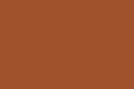
|
Note the use of the "
-alpha" operator to set the transparency to something useful
before (or after) the color has been added. Altrunativally you could use
"
-channel All" to ensure the transparency channel is also set by
the color resetting operation.
Another older technique is to use "
-colorize" to overlay the fill color but with a fully opaque
value. However before IM v6.7.9 it did not change the the original images
alpha channel, so it is a good idea if to disable the alpha channel first,
using "
-alpha Off", or make it opaque with
"
-alpha Opaque" even though you would get the
same result without it.
magick test.png -alpha off -fill Chocolate -colorize 100%
color_colorize.gif
|
 |
Note that "-alpha Off" (or the older equivelent
"+matte") only disables
the alpha channel. if you turn it On
again afterwards, the original alpha channel (which was preserved) will be
restored. Before IM v6.7.9 alpha was preserved when using "-colorize".
|
|
|
As of IM v6.4.3-0 you can use the "-sparse-color" operator to
set some point to the color wanted, and have it spread to cover the whole
image, using just about any coloring method it provides (see Sparse Points of Color below).
magick test.png -alpha Off \
-sparse-color Voronoi '0,0 Peru' color_sparse.gif
|
|
![[IM Output]](color_sparse.gif)
|
A more general way is to use "-draw" to directly reset all the colors in the current image to
the current "-fill" color.
magick test.png -fill Tan -draw 'color 0,0 reset' color_reset.gif
|
|
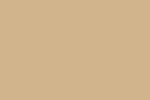
|
This was the recommended method in ImageMagick version 5.
The major complaint about all the above 'simple' methods is that none simply
resets the image to the current "
-background" color. The next set methods make use of
Alpha Composition to force various operators to
replace the image with the desired color. These multi-image techniques work
with operators that use "
-compose".
The above as uses the '
Dst'
compose method to only read the background canvas, and ignore the pixel colors
of the original image.
If you are just wanting to grab the original images meta-data (such as the
comment or label data), but replace the image itself with a specific color and
size of canvas image, then "-extent" operator (See Extent, Direct
Image Size Adjustment) may be the best solution.
Again the Dst' compose method is
used to have it ignore the original image pixel data, so as to onlyuse the
"-background" color.
magick test.png -background LemonChiffon \
-compose Dst -extent 100x100 color_extent.gif
|
|
|
This last method has the added advantage of also letting you slightly enlarge
the image canvas, relative to the original images size.
|
The "-border" method
of generating canvases will not work with versions of IM before version
6.1.4. Before this the background generated by the "-border" operator was not a
simple solid color, but a black canvas surrounded by the border color. Not
very useful.
|
A more flexible (but very slow) method of canvas generation was provided by
the "FX, DIY Operator" operator.
You will also need to turn off the input image's transparency channel as by
default "-fx" will not touch
the transparency channel.
magick test.png -alpha off -fx Gold color_fx_constant.gif
|
|
|
The "-fx" operator will even
let you do a little color mathematics. For example how about a 70% darker gold
color...
magick test.png -alpha off -fx "Gold*.7" color_fx_math.gif
|
|
![[IM Output]](color_fx_math.gif)
|
All the above methods cannot only fill using a fully-opaque color, but can
also use semi-transparent colors. However it is a good idea to ensure the
image you have a transparency channel before hand.
Here for example we create a canvas with a semi-transparent red. However when
overlaid on the web pages 'bluish' background we get an off purple-pink color.
magick test.png -alpha set -fill '#FF000040' -draw 'color 0,0 reset' \
color_semitrans.png
|
|
![[IM Output]](color_semitrans.png)
|
Also note that when using "
-fx" operator with transparency, you will need to set "
-channel" to modify all four
'
RGBA' color channels.
Blanking Image with Picked Color
Blanking images using a color from the original image is also posible,
though can be tricky. It is an useful technique when you want to use
a specific pixel as a 'background color'. For example pixel 0,0 is a common
choice.
![[IM Output]](../images/rose.png)
In the following examples I will select colors from various pixels from the
built in rose image (shown left), as I blank the image.
The most obvious (though slow) method is to simply use the "
FX, DIY Operator" to select the pixel to
use color blanking.
magick rose: -fx 'p{0,0}' color_pick_fx.png
|
|
|
However this can be speed up by only selecting the pixel once. This can be done
by using the fx formula as an argument for
Sparse
Color. It may seem less simple, but it is much faster.
magick rose: -sparse-color voronoi '0,0 %[pixel:p{40,30}]'
color_pick_sparse.png
|
|
![[IM Output]](color_pick_sparse.png)
|
Another more complex method is to crop out that one pixel and tile it across
the image, using techniques described later in detail in
Tiling with an Image already In Memory
magick rose: \( +clone -crop 1x1+64+22 -write MPR:pixel +delete \) \
-fill mpr:pixel -draw 'color 0,0 reset' \
color_pick_draw.png
|
|
![[IM Output]](color_pick_draw.png)
|
magick rose: -set option:distort:viewport '%wx%h+0+0' \
-crop 1x1+10+25 +repage -distort SRT 0 \
color_pick_distort.png
|
|
![[IM Output]](color_pick_distort.png)
|
Other Canvas Techniques
Their lots of other ways of generating canvases of very specific colors, but
they are rather obtuse. As such without some heavy commenting, it may not be
obvious what you are actually doing when you look at your IM script months or
years later.
I don't recommend these techniques, but are useful to know if you are using
older less flexible versions of IM.
Black Canvas
Traditionally you can create a black canvas by using "-threshold", and then turn off
the transparency channel.
magick test.png -threshold 100% -alpha off black_threshold.png
|
|
![[IM Output]](black_threshold.png)
|
Providing the "-level"
operator with the same argument for both 'black' and 'white' points will have
the same effect.
magick test.png -level 100%,100% -alpha off black_level.png
|
|
![[IM Output]](black_level.png)
|
The "-fx" operator
provides a more obvious way of creating a black canvas by clearing all the
pixels to zero. However you will also need to reset the alpha channel to make
it fully opaque.
magick test.png -fx 0 -alpha off black_fx.png
|
|
![[IM Output]](black_fx.png)
|
However the "-evaluate"
version of this should be faster, particularly on larger images.
magick test.png -evaluate set 0 -alpha off black_evaluate.png
|
|
|
You can also mis-use the "-gamma" operator to make an image all black.
magick test.png -gamma 0 -alpha off black_gamma.png
|
|
![[IM Output]](black_gamma.png)
|
A less obvious way is to 'posterize' the image with too few color levels,
resulting in only one color being used, black.
magick test.png -posterize 1 -alpha off black_posterize.png
|
|
![[IM Output]](black_posterize.png)
|
You can ensure the image is fully transparent then 'extract' the
images mask, using the Alpha Operator
magick test.png -alpha transparent -alpha extract black_alpha.png
| |
![[IM Output]](black_alpha.png)
|
White Canvas
The traditional way is again using "-threshold". The value however must be a negative number, just to
be sure that all colors will be mapped to white, in all versions of IM.
magick test.png -threshold -1 -alpha off white_threshold.png
|
|
![[IM Output]](white_threshold.png)
|
Providing the "-level"
operator with same argument for both 'black' and 'white' points will have the
same effect.
magick test.png -level -1,-1 -alpha off white_level.png
|
|
![[IM Output]](white_level.png)
|
You can of course set the pixel values directly using the "-fx" operator.
magick test.png -fx 1.0 -alpha off white_fx.png
|
|
![[IM Output]](white_fx.png)
|
However the "-evaluate"
version of this should be faster, particularly on larger images.
magick test.png -evaluate set 100% -alpha off white_evaluate.png
|
|
![[IM Output]](white_evaluate.png)
|
Or negate some other black canvas generation method.
magick test.png -posterize 1 -alpha off -negate white_posterize.png
|
|
|
You can ensure the image is fully opaque (no transparency) then
'extract' the images mask, using the Alpha Operator
magick test.png -alpha opaque -alpha extract white_alpha.png
| |
![[IM Output]](white_alpha.png)
|
Transparent Canvas
Probably the most important canvas you want to generate from an existing image
is a transparent canvas. You can then draw and add things to this canvas,
get it the way you want it, the overlay it onto the original image.
The fastest and easiest way is to just get IM to directly clear the image to
transparency, using the "-alpha transparent" operator (added IM v6.4.3-7).
magick test.png -alpha transparent trans_alpha.png
|
However as this is a very recent addition it is probably not widely available
yet.
|
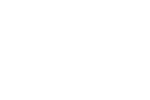
|
We can make a fully-transparent 'black' canvas using the 'Clear' alpha composition operator, with any
overlay image (a single pixel "null:" in this case) as it will be
ignored.
magick test.png null: -alpha set -compose Clear -magick composite -compose Over \
trans_compose.png
| |
|
Here we use the "-draw matte" operator to replace the matte
(transparency) channel value with the transparency value of the current
"-fill" color setting. In
this case make it fully-transparent.
magick test.png -alpha set -fill none -draw 'matte 0,0 reset'
color_matte.png
|
|
![[IM Output]](color_matte.png)
|
We can also do this more directly with the "-fx" operator.
magick test.png -alpha set -channel A -fx 0 +channel trans_fx.png
|
|
![[IM Output]](trans_fx.png)
|
Naturally the "-evaluate" version of this should be faster, particularly on
larger images.
magick test.png -alpha set -channel A -evaluate set 0 +channel \
trans_evaluate.png
|
|
![[IM Output]](trans_evaluate.png)
|
Another way to just make the image fully transparent is to use "-threshold" but again
limiting its effects to just the transparency channel.
magick test.png -channel A -threshold -1 +channel trans_threshold.png
|
|
![[IM Output]](trans_threshold.png)
|
Actually in this case we are mathematically dealing with a 'matte' channel,
using threshold to set it to the maximum value, rather than zero as we did
with the "
-fx" operator.
This is why a '
-1' was used in the above, rather than something
like
101%'.
In many of the above image results, the original RGB colors of the original
image are still present, they have just been made transparent.
For example, here we read in one of the above images and ask IM to turn off
the matte/alpha channel in the image so as to make the colors visible again.
magick trans_fx.png -alpha off trans_fx_alpha_off.jpg
|
Note however that not all image file formats and very few image operations
will preserve the partially-transparent RGB colors that are still present in
the resulting image.
|
![[IM Output]](trans_fx_alpha_off.jpg)
|
As mentioned before, and worth repeating, many of the above methods rely on an
image already having a matte channel. If it doesn't, add one using the
"
-alpha On", but in that case you may as well
just use the "
-alpha
Transparent" operator. See the examples on
Controlling Image Transparency.
Miscellaneous Canvas Coloring
Other than using a specific color, only the "-gamma" operator is truly
flexible enough to generate a canvas of any primary/secondary color. You
basically use 0 to zero out a channel, and -1 to
maximize a channel values.
For example here I generate a yellow canvas...
magick test.png -gamma -1,-1,0 -alpha off yellow_gamma.png
|
|
![[IM Output]](yellow_gamma.png)
|
As of IM v6.4.2 you can also use the "+level" operator to set a specific grey level for all the color
channels.
magick test.png +level 40%,40% -alpha off grey_level.png
|
|
|
Gradients of Color
As you saw above you can create canvases of solid colors easy enough. But
sometimes you want something more interesting.
One very useful image creation operators is "gradient:".
For example...
magick -size 100x100 gradient: gradient.jpg
|
|
![[IM Output]](gradient.jpg)
|
As you can see by default "
gradient:" will create an image with
white at the top, and black at the bottom, and a smooth shading of grey across
the height of the image.
But it does not have to be only a grey-scale gradient, you can also generate
a gradient of different colors by either specifying one color, or both.
magick -size 100x100 gradient:blue gradient_range1.jpg
magick -size 100x100 gradient:yellow gradient_range2.jpg
magick -size 100x100 gradient:green-yellow gradient_range3.jpg
magick -size 100x100 gradient:red-blue gradient_range4.jpg
magick -size 100x100 gradient:tomato-steelblue gradient_range5.jpg
|
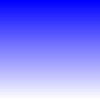
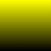
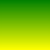
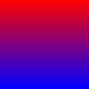
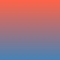
Notice that when given a single color the second color will be either
'
white' or '
black', which ever produces the largest
color distance from the given color. As such '
blue' produces
a '
blue-white' gradient, while '
yellow' generated
a '
yellow-black' gradient.
The '
red-blue' gradient shows a much darker band of purple colors
in the middle. This darkening is caused by the darker non-linear sRGB
colorspace being used, especially with strong primary colors. See
Processing Real Images for more
details.
 |
"gradient:" currently only understands sRGB Color Space color representations.
As such you can not use it to generate a brighter more correct 'purple'
gradient using 'red-blue' colors in a linear LAB colorspace.
It also means you can not generate multi-color 'rainbow' gradients using
HSV colorspace.
However you can 'fudge' such gradients relatively simply. See Gradients in other Colorspaces below.
|
|
Gradients cannot currently be specified at other angles or involving
more than two colors. However as this ability is in integral part of SVG
gradients, this situation will likely change, with a major improvement in
gradient options.
|
Some particularly nice gradients include...
magick -size 10x120 gradient:snow-navy gradient_ice-sea.jpg
magick -size 10x120 gradient:gold-firebrick gradient_burnished.jpg
magick -size 10x120 gradient:yellow-limegreen gradient_grassland.jpg
magick -size 10x120 gradient:khaki-tomato gradient_sunset.jpg
magick -size 10x120 gradient:darkcyan-snow gradient_snow_scape.jpg
| |
![[IM Output]](gradient_ice-sea.jpg)
![[IM Output]](gradient_grassland.jpg)
![[IM Output]](gradient_sunset.jpg)
![[IM Output]](gradient_snow_scape.jpg)
|
|
As of IM v6.3.1 the algorithm used to generate gradients now produce
a horizontally uniform colors, such that all the pixels of each row in an
image being assigned the same color. That is one color per row.
Before this version the "gradient:" operator worked by ignoring
the width of the image, and just assigning the next increment of color,
going row-by-row from top-left corner to the bottom-right of the image.
As a result the gradient was a predominately vertical gradient, just as it
is now, but not a perfect one. Usually this fact was only important in
special case such as test images, and for use in Image Mapping.
|
Radial Gradients
As of IM v6.4.4 you can also generate radial gradient images in a similar way.
magick -size 100x100 radial-gradient: rgradient.jpg
|
|
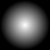
|
Note that the gradient is centered in the middle of the generated image, and
has a diameter set to fit the larger of the X or Y size of the image. So if
the size of the image isn't square you will get a 'clipped' radial gradient.
magick -size 100x60 radial-gradient: rgradient_clip.jpg
|
|
![[IM Output]](rgradient_clip.jpg)
|
This lets you easily generate a square radial gradient from the center to a
corner by making one edge 1.42 (square root of 2) times larger, and crop it.
magick -size 100x142 radial-gradient: \
-gravity center -crop 100x100+0+0 rgradient_crop.jpg
|
|
![[IM Output]](rgradient_crop.jpg)
|
The colors of the gradient itself follow the same conventions as the much
older linear "
gradient:" image
generator.
magick -size 100x100 radial-gradient:blue rgradient_range1.jpg
magick -size 100x100 radial-gradient:yellow rgradient_range2.jpg
magick -size 100x100 radial-gradient:green-yellow rgradient_range3.jpg
magick -size 100x100 radial-gradient:red-blue rgradient_range4.jpg
magick -size 100x100 radial-gradient:tomato-steelblue rgradient_range5.jpg
|
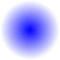
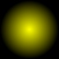
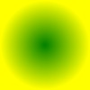
![[IM Output]](rgradient_range4.jpg)
![[IM Output]](rgradient_range5.jpg)
Gradients with Transparency
As of IM v6.2.9-8 the "gradient:" (and later
"radial-gradient:") image creation operator understands the use
of transparent and semi-transparent colors.
magick -size 100x100 gradient:none-firebrick gradient_transparent.png
| |
![[IM Output]](gradient_transparent.png)
|
|
Before ImageMagick 6.5.4-7 gradients involving a full transparency (such as
the last example) would generally produce a black halo.
What was happening is that the gradient generated was from the given color
to the special color 'none' or transparent-black. As
a result colors would shade toward a semi-transparent black, before
becoming fully-transparent.
The solution to this problem was to generate a transparency gradient
and then Colorize it with the desired
color.
|
magick -size 100x100 gradient:none-black \
-fill firebrick -colorize 100% gradient_trans_colorize.png
| |
![[IM Output]](gradient_trans_colorize.png)
|
Gradients by Histogram Adjustment
You can create a non-linear gradient by applying some form of histogram
adjustment to a linear gradient.
For example you can use a
Sigmoidal
Contrast function to create a more natural looking gradient.
magick -size 100x100 gradient: -sigmoidal-contrast 6,50% \
gradient_sigmoidal.jpg
| |
|
This type of gradient is especially good for generating
Overlapping Photos, as it removed the sharp
gradient changes at the beginning of the overlapping region.
Evaluate/Function Gradients
You can also use the
Evaluate Operator
and related
Function Operator
to modify a simple linear gradient.
magick -size 100x100 gradient: -evaluate cos 0.5 -negate \
gradient_cosine.jpg
| |
![[IM Output]](gradient_cosine.jpg)
|
Or take it a step further and make a smooth parabolic peek in the center of
the linear gradient.
magick -size 100x100 gradient: -function Polynomial -4,4,0 \
gradient_peak.jpg
| |
![[IM Output]](gradient_peak.jpg)
|
Or band or a rippled pattern...
magick -size 100x100 gradient: -function sinusoid 4,-90 \
gradient_bands.jpg
| |
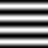
|
Both of these closely related operators allow you to modify images and
gradients based on Sine Curves, Polynomials, Logarithmic and Power-of
mathematical functions. See
Evaluate Math
Functions and
Function, Multi-Argument
Evaluate for more examples.
Distorted Gradients
Rotated Gradient
While the
Sparse Color method '
Barycentric' (see below), provides a
convenient way to generate gradients at any angle, if your IM is older than
version 6.4.3-0 then you may need to use other methods to generate a diagonal
or rotated gradient.
For example, by increasing the size of the gradient image (multiply by the
square root of 2 or 1.42), then rotate it 45 degrees, and crop the image to
its final size, you can make a diagonal gradient.
magick -size 142x142 gradient: -rotate -45 \
-gravity center -crop 100x100+0+0 +repage \
gradient_diagonal.jpg
| |
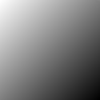
|
As of IM v6.3.5 you have a much faster and simpler way of generating a
rotated gradient by using a
SRT Distortion.
For example, here is a 100 pixel gradient rotated 60 degrees, in a 100x100
pixel image.
magick -size 100x100 gradient: -distort SRT 60 gradient_srt.jpg
| |
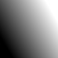
|
This uses the default
Virtual Pixel,
Edge setting to ensure the whole image is covered by the requested
gradient. You can also use the expert
Distort Viewport setting, to map a gradient onto a larger image, such as
for an use in
Overlapping Photos.
Warping Gradients
But you can use the same distortion methods to do a lot more than simple
rotations.
The gradient can also be twisted up...
magick -size 100x100 gradient: -swirl 180 gradient_swirl.jpg
| |
![[IM Output]](gradient_swirl.jpg)
|
You can re-map the gradient into a trapezoidal shape.
magick -size 100x100 gradient: -rotate -90 \
-distort Perspective '0,0 40,0 99,0 59,0 0,99 -10,99 99,99 109,99'
\
gradient_trapezoid.jpg
| |
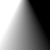
|
Or wrap the gradient into an arcs and circles using the
General Distortion Operator...
magick -size 100x100 gradient: -distort Arc '180 0 50 0' \
gradient_arc.jpg
| |
![[IM Output]](gradient_arc.jpg)
|
magick -size 100x100 gradient: -distort Arc '360 0 50 0' \
gradient_circle.jpg
| |
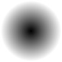
|
Though the new "
radial-gradient:"
is probably the more simpler method for generating these gradients.
A very useful but harder to generate gradient is a polar angle gradient.
The exact form of this gradient depends on if the gradient should be centered
on an even sized image, or an odd sized image. For example an
Arc Distort can be used to generate images with
an even number of pixel dimensions, 76 pixels in this case.
magick -size 1x1000 gradient: -rotate 90 \
-distort Arc '360 -90 50 0' +repage \
-gravity center -crop 76x76+0+0 +repage gradient_angle_even.png
| |
![[IM Output]](gradient_angle_even.png)
|
The '
-90' in the above sets the angle for the 'discontinuity'
where 'zero' and 'maximum' wraps around to the same value. The value
'
50' should be at more than 1/2 the size of the final cropped
image. Note how I used a much longer gradient to generate the smaller image.
This improves the overall correctness of the result, especially as the image
gets larger
The closely related
Polar Distort can also
generate such a gradient, but as it has a control over the exact position of
the 'center' of the distortion you can ensure it correctly generates an odd
pixel size polar gradient image. In this case a 75 pixel image (radius
= '
36.5' )
magick -size 1x1000 gradient: -rotate 90 \
+distort Polar '36.5,0,.5,.5' +repage \
-transverse gradient_angle_odd.png
| |
![[IM Output]](gradient_angle_odd.png)
|
The last two images may seem very similar, except for their size, but the
handling of the center-most pixels is slightly different. If you look closely
you will see that the last example has a perfect grey center pixel, where the
previous example does not have a single center pixel, but four of them.
The final size of the image was determined by the value '
36.5'
which is half of the '
75' pixels wanted. The '
.5'
offsets is the important aspect for correct handling of the polar center.
Note that by default the distortion places the discontinuity at the top of the
image, as such the
Transverse Warp
corrects the angle and location of the discontinuity to match that produced by
the
Arc Distort.
Here is a slightly different variant that generates an angular gradient but
with a transparent circular mask.
magick -size 50x1000 gradient: -rotate 90 -alpha set \
-virtual-pixel Transparent +distort Polar 49 +repage \
-transverse gradient_angle_masked.png
| |
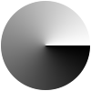
|
The value '
49' is the radius minus 1 as by default a distort adds
a 1 pixel anti-aliasing buffer around the resulting image. As such final image
is 100x100 pixels.
Circular shapes and gradients can be warped to produce some interesting
non-linear gradients. For example arcing it using a
Wave Distortion can generate roughly triangular
shaped gradient.
magick -size 100x100 radial-gradient: \
-background black -wave -28x200 -crop 100x100+0+0 +repage \
gradient_triangle.jpg
| |
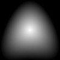
|
Or a very odd looking bird like shape, generated by polar distortion along
the top edge of the circular shape.
magick -size 100x100 radial-gradient: \
+distort Polar '49' +repage \
gradient_bird.jpg
| |
![[IM Output]](gradient_bird.jpg)
|
Gradients by Composition
You can also modify gradients by combining them using various composition
methods. For example you can use the
Modulus_Add compose method to produce Venetian blind types of gradients.
magick -size 100x100 gradient: \( +clone +clone \) \
-background gray50 -compose ModulusAdd -flatten \
gradient_venetian.jpg
| |
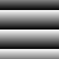
|
And even do this diagonally.
magick -size 100x100 gradient: \( gradient: -rotate -90 \) \
\( -clone 0--1 -clone 0--1 \) \
-background gray50 -compose ModulusAdd -flatten \
gradient_vent_diag.jpg
| |
![[IM Output]](gradient_vent_diag.jpg)
|
Or by blending two plain color gradients using either
Channel Copying, or
Mathematical Blending composition methods, you can generate colorful 2
dimensional colormap gradients.
magick -size 100x100 gradient:yellow-blue \
\( gradient:black-lime -rotate -90 \) \
-compose CopyGreen -magick composite gradient_colormap.jpg
| |
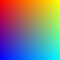
|
Gradients in other Colorspaces
While "
gradient:" generator currently cannot generate gradients
directly in some another
Color
Spaces, (only non-linear sRGB gradient images are created) you can
transfer gradients into a different color space to generate interesting
effects. For example...
magick -size 30x600 xc:red -colorspace HSB \
gradient: -compose CopyRed -magick composite \
-colorspace RGB -rotate 90 gradient_rainbow.jpg
|
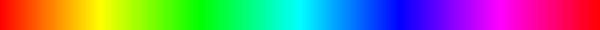
This first converts a highly saturated color ('
red') into HSL
colorspace, any saturated color can be used. This correctly sets the images
saturation and brightness channels to the appropriate values. After this
a gradient is generated and copied into the 'Hue' (equivalent to the 'red')
channel of this HSL colorspace image. And hey presto when we magick the HSL
image back to RGB, we get a full rainbow gradient of fully-saturated colors.
Another method is to generate a gradient of just the right values for one of
these colorspaces, then change the images colorspace (using "
-set"). This changes the colorspace
without changing the color values that we created in the image. Now when we
magick back to RGB we get the same rainbow of values.
magick -size 30x600 gradient:'#FFF-#0FF' -rotate 90 \
-set colorspace HSB -colorspace RGB \
gradient_rainbow_2.jpg
|
![[IM Output]](gradient_rainbow_2.jpg)
The result is actually exactly the same as the previous method, just a little
more direct, in that we generate the right values for the desired colorspace,
then set the colorspace those values belong to.
Here we take the masked angular gradient (see above) and re-map it into the
HSB color space to generate a circular hue of colors. Red (hue=0) is rotated
toward to the right, where it is traditionally placed (polar coordinates angle
0).
magick -size 100x300 gradient:'#FFF-#0FF' -rotate 90 \
-alpha set -virtual-pixel Transparent +distort Polar 49 +repage \
-rotate 90 -set colorspace HSB -colorspace RGB \
gradient_hue_polar.png
| |
![[IM Output]](gradient_hue_polar.png)
|
A similar example to the above is
Color
Wheel, which is generated by
Combining
Channel Images with both a Hue and a Lightness gradient.
Resized Gradient
One trick that was brought up on the by Glenn Randers-Pehrson, was to create a very small image, two
pixels across, then expand that to the image size needed using "
-resize".
The
Resize Operator tries to smooth out
enlarged images, to make them look better at the larger scale. It is this
smoothing that we use to generate a non-linear gradient.
For example here we generate the small image using a 'portable bitmap' (or
PBM format) image and feed it into IM for enlargement.
echo "P1 1 2 0 1 " | \
magick - -resize 100x100\! gradient_resize.jpg
|
|
![[IM Output]](gradient_resize.jpg)
|
|
Some shells like 'csh' and variants, cannot handle the '!'
character in the above resize geometry setting very well -- not even in
quotes. Hence the backslash '\' character may be needed.
Caution is advised.
|
The gradient produced is not linear, with a smooth start and finish to the
colors given, making those colors much more pronounced, than you would get
using a normal gradient. The actual function the gradient follows depends on
(and is close to) the exact
Resampling Filter that
was used by resize.
A simple way to generate that initial two-pixel image is actually with
gradient itself! This lets you specify the colors directly. Of course that
will limit you to a vertical gradient, unless you rotate the result as well.
magick -size 1x2 gradient:khaki-tomato \
-resize 100x100\! gradient_resize2.jpg
| |
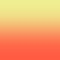
|
Of course you are not limited to just a single dimension, with this technique.
Here I use a four pixel 'portable greymap' (or PGM image format) to generate a
2-dimensional gradient.
echo "P2 2 2 2 2 1 1 0 " | \
magick - -resize 100x100\! gradient_resize3.jpg
| |
![[IM Output]](gradient_resize3.jpg)
|
As you can see this diagonal gradient is not very linear when compared to
the
Rotated Gradient above.
|
The Network Portable Bitmap
image formats, are very versatile for generating images from scripts.
It is a format that is well worth knowing as a means of generating or
manipulating image data.
|
If you look carefully you will also see that the gradient also starts from the
center of the enlarged pixel, and does not cover the whole image from edge to
edge. This becomes more clear if we use a Triangle Resize Filter.
magick \( xc:red xc:blue +append \) \
\( xc:yellow xc:cyan +append \) -append \
-filter triangle -resize 100x100\! gradient_resize4.jpg
| |
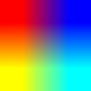
|
The Resize Operator smoothes the color
between these pixels according to the "Resampling Filter" setings. By adjusting the filter you can have
the resize gradient generate a more edge to edge effect.
magick -size 1x2 gradient: \
-filter Cubic -resize 100x100\! gradient_resize5.jpg
|
|
![[IM Output]](gradient_resize5.jpg)
|
Here is rough "Rainbow Gradient" created using the 'resize' technique.
magick xc:black xc:red xc:yellow xc:green1 xc:cyan xc:blue xc:black \
+append -filter Cubic -resize 600x30\! gradient_rs_rainbow.jpg
|
With this method you can use any color combination and order for the gradients
generation. This makes it very well suited to generating
Color Lookup Tables.
Interpolated Lookup Gradients
For more information on the "
-interpolate" setting see
Interpolation Setting.
Another method of generating gradients is to use the special
Interpolation Setting. This setting is used
to determine the pixel color returned when the pixel lookup is not an integer,
and thus does not exactly match a specific pixel. Interpolation then
determines
the color based on the pixels that surround the lookup point.
The default setting of '
bilinear' for example will linearly
determine the color for a lookup that falls between two pixels.
magick -size 600x30 xc: \( +size xc:gold xc:firebrick +append \) \
-fx 'v.p{i/(w-1),0}' gradient_interpolated.jpg
|
![[IM Output]](gradient_interpolated.jpg)
Here the lookup X position '
i/(w-1)' goes from '
0.0'
to '
1.0' over the second two-pixel image. The floating point
number produces a perfect linear gradient, much like "
gradient:" does.
The above is actually almost equivalent (see
Perfect Gradients for difference) to using a
Clut Recolored Images" to recolor
a gradient image, using interpolated lookup of the two color image.
magick -size 30x600 gradient: -rotate 90 \
\( +size xc:gold xc:firebrick +append \) -clut \
gradient_clut_recolored.jpg
|
Using this method also allows you to generate multi-colored gradients.
magick -size 30x600 gradient: -rotate 90 -interpolate Bicubic \
\( +size xc:black xc:tomato xc:wheat +append \) -clut \
gradient_clut.jpg
|
![[IM Output]](gradient_clut.jpg)
The limitation however is that the colors can only be defined with equal
spacing. You can not simply shift the position of the middle color, except by
roughly modifying the input gradient to some non-linear form, so as to shift
that center. For more than three color is situation becomes worse.
The above is also a good technique for coloring greyscale images using
Duotones, with a guarantee on exactly
defining the mid-tone color (unlike using the
Tint Operator).
Interpolated lookup gradients can also be expanded to 2 dimensions, and
generate square linear gradients (
Bilinear
Interpolation), just as easily as purely one dimensions gradients.
magick \( xc:red xc:blue +append \) \
\( xc:yellow xc:cyan +append \) -append \
-size 100x100 xc: +swap -fx 'v.p{i/(w-1),j/(h-1)}' \
gradient_bilinear.jpg
| |
![[IM Output]](gradient_bilinear.jpg)
|
Here is the same example but using
Catrom
Interpolation, and generating using the
Distort Operator instead of the very slow FX operator.
magick \( xc:red xc:blue +append \) \
\( xc:yellow xc:cyan +append \) -append \
-filter point -interpolate catrom \
-define distort:viewport=100x100 \
-distort Affine '.5,.5 .5,.5 1.5,1.5 99.5,99.5' \
gradient_catrom.jpg
| |
![[IM Output]](gradient_catrom.jpg)
|
The key point to understanding the above is that we are enlarging the small
image based on the centers of its pixels. See
Image Coordinates vs Pixel
Coordinates for details.
Note that most interpolation methods have equivalent
Interpolated Resize Filters. But
the use of the viewport and pixel coordinates removes the edge effects that is
shown in the previous
Resize Gradients caused
by extreme upscaling of the very small image.
The
Mesh Interpolation setting however is not
available as a
Resize Filter. It is
a special 2 dimensional interpolation that divides the intra-pixel area into
two flat linear triangles, hinged along the diagonal connecting the corners
with the minimal color difference.
So by making two colors the same color, and using "
-interpolate
mesh" you can generate a very different 2D gradient.
magick \( xc:red xc:gold +append \) \
\( xc:gold xc:green +append \) -append \
-filter point -interpolate mesh \
-define distort:viewport=100x100 \
-distort Affine '.5,.5 .5,.5 1.5,1.5 99.5,99.5' \
gradient_mesh.jpg
| |
![[IM Output]](gradient_mesh.jpg)
|
As the two diagonally opposite yellow corners are the same, a diagonal of
yellow was used to join them. With the other colors linearly mapped to those
triangles. If the two diagonal colors are not the same, you may get
a different diagonal division.
Roll your own gradient
The
FX DIY Operator, lets you define your own
gradients or other image generation, based on the current pixel position.
As this operator requires an image to work with, you can generate your
gradients or other images to match that image. That is you don't have to know
the size of the image to generate a gradient for it!
For example you can easily generate a linear gradient, sized correctly for
the image you may be working on.
magick rose: -channel G -fx 'i/w' -separate gradient_fx_linear.gif
| |
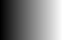
|
|
When generating gray-scale gradients, you can make the -fx operator 3 times
faster, simply by asking it to only generate one color channel only, such as
the 'G' or green channel in the above example. This channel
can then be Separated to form the
required gray-scale image. This can represent a very large speed boost,
especially when using a very complex "-fx" formula.
|
You can even generate some neat non-linear gradients.
magick rose: -channel G -fx '(i/w)^4' -separate gradient_fx_x4.gif
| |
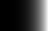
|
magick rose: -channel G -fx 'cos(pi*(i/w-.5))' \
-separate gradient_fx_cos.gif
| |
![[IM Output]](gradient_fx_cos.gif)
|
How about a 2-dimensional circular linear radial gradient (a cone).
magick -size 100x100 xc: -channel G \
-fx 'rr=hypot(i/w-.5, j/h-.5); 1-rr*1.42' \
-separate gradient_fx_radial.gif
| |
![[IM Output]](gradient_fx_radial.gif)
|
|
The "-fx" function
'rr=hypot(xx,yy)' was added to IM v6.3.6 to speed up the very
commonly used expression 'rr=sqrt(xx*xx+yy*yy)'. It also meant
that we no longer need to make extra assignments such as
'xx=i/w-.5' when creating a radial gradient.
|
The value '
1.42' (or
sqrt(2)) in the above controls
the overall size of the gradient relative to the images dimensions. In this
way the radius of the gradient (how far black is from center) is diagonal
distance to the corner.
You can even remove the 'sqrt()' (built into the
'hypot()' function) from the expression to make a more
interesting spherical gradient, which can be useful for 3D Shading Effects.
magick -size 100x100 xc: -channel G \
-fx 'xx=i/w-.5; yy=j/h-.5; rr=xx*xx+yy*yy; 1-rr*4' \
-separate gradient_fx_spherical.gif
| |
![[IM Output]](gradient_fx_spherical.gif)
|
Note how I use some assignment expressions to simplify the calculation of the
distance from center of the image, then magick it to a gradient. This
feature was added in IM v6.3.0.
Using a high power function, you can give photos a fade off effect around the
rectangular edges of the image. Adjust the power value '4' to
control the amount of fading.
magick -size 100x100 xc: -channel G \
-fx '(1-(2*i/w-1)^4)*(1-(2*j/h-1)^4)' \
-separate gradient_fx_quad2.gif
| |
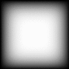
|
Here is an angular gradient, generated using direct mathematics.
magick -size 100x100 xc: -channel G \
-fx '.5 - atan2(j-h/2,w/2-i)/pi/2' \
-separate gradient_fx_angular.gif
| |
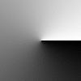
|
Note that the '
atan2(y,x)' function returns an angle in radians
from -PI to +PI (see its manpage), so its output needs to be be scaled and
translated to correctly fit a 0.0 to 1.0 color range. This is why the above
looks so much more complex than it really is.
This last example can be generated faster by
Distorting a Gradient.
More Complex DIY Gradients
ASIDE: This section was created before the addition of Sparse Points of Color, and the had a direct
influence on its creation.
Of course an FX function can generate color gradients. For example here is a
gradient based on distance ratios, using an extremely complex FX expression.
magick -size 100x100 xc: +size xc:red xc:yellow -colorspace RGB \
-fx 'ar=hypot( i/w-.8, j/h-.3 )*4;
br=hypot( i/w-.3, j/h-.7 )*4;
u[1]*br/(ar+br) + u[2]*ar/(ar+br)' \
-colorspace RGB gradient_dist_ratio.gif
| |
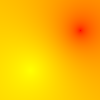
|
|
The image processing was performed in a linear color space (RGB) to avoid
'sRGB darken' during the blending of such strong primary colors. See Processing Real Images for more
details.
|
When going from two points to three points the ratio of how much color each
'control point' provides, is a bit more complex, and uses a technique called
Inverse Distance Weighted (IDW) Interpolation. You can see more details math
for this in
Wikipedia, IDW
Here is an inverse distance example for three points.
magick -size 100x100 xc: +size xc:red xc:yellow xc:lime -colorspace RGB \
-fx 'ar=1/max(1, hypot(i-50,j-10) );
br=1/max(1, hypot(i-10,j-70) );
cr=1/max(1, hypot(i-90,j-90) );
( u[1]*ar + u[2]*br + u[3]*cr )/( ar+br+cr )' \
-colorspace sRGB gradient_inverse.gif
| |
|
And here I use an inverse distance squared which is the more normal method used
for an IDW interpolation. This is also known as Shepard's Interpolation method.
magick -size 100x100 xc: +size xc:red xc:yellow xc:lime -colorspace RGB \
-fx 'ar=1/max(1, (i-50)*(i-50)+(j-10)*(j-10) );
br=1/max(1, (i-10)*(i-10)+(j-70)*(j-70) );
cr=1/max(1, (i-90)*(i-90)+(j-90)*(j-90) );
( u[1]*ar + u[2]*br + u[3]*cr )/( ar+br+cr )' \
-colorspace sRGB gradient_shepards.gif
| |
![[IM Output]](gradient_shepards.gif)
|
Note that the '
hypot()' function was not used in the above
as there is no need to generate a square root of the distance.
The above has now been implemented using the
Sparse
Color methods '
Inverse' and '
Shepard's'. As such the above can now be done
far
more simply using...
magick -size 100x100 xc: -colorspace RGB \
-sparse-color Inverse '50,10 red 10,70 yellow 90,90 lime' \
-colorspace sRGB gradient_inverse_alt.gif
magick -size 100x100 xc: -colorspace RGB \
-sparse-color Shepards '50,10 red 10,70 yellow 90,90 lime' \
-colorspace sRGB gradient_shepards_alt.gif
|
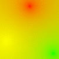
![[IM Output]](gradient_shepards_alt.gif)
The problem with using either 'Inverse Distance' or 'Shepard's Method'
(inverse squared distance) is that all the 'control points' has a global
effect over the whole image. As a result you get a sort of underlying
'average color' in between the points, and especially at a large distance from
all control points. This, in turn, produces 'spots' of color rather than
a smooth gradient of color.
DIY Gradients and Hues
-- (Hues are hard to deal with)
ASIDE: This was a sort of failed attempt to generate an interesting rainbow
effect. It was a failure, but I learned a lot from that failure, which
I present to you here.
The above works well but I wanted to try and to do better. I thought perhaps
I could generate a bright rainbow gradient of colors between the points,
rather than generating spots that merges into an average color.
So to generate a hue gradient, I tried to do the
Inverse
Distance Weighted Interpolation in HSB colorspace, though I switched the
yellow to blue, to make the colors more equally spaced around the hue, and
hopefully provide another way of generating a color wheel (see
Gradients in Other Colorspaces above).
magick -size 100x100 xc: +size xc:red xc:blue xc:lime -colorspace HSB \
-fx 'ar=1/max(1, (i-50)*(i-50)+(j-10)*(j-10) );
br=1/max(1, (i-10)*(i-10)+(j-70)*(j-70) );
cr=1/max(1, (i-90)*(i-90)+(j-90)*(j-90) );
( u[1]*ar + u[2]*br + u[3]*cr )/( ar+br+cr )' \
-colorspace sRGB gradient_shepards_HSB.gif
| |
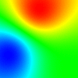
|
As you can see all the colors were nice an bright as we are only generating
a hue gradient. However it also appears very strange, which is caused by the
'cyclic' nature of the 'Hue' color channel. As a consequence the area between
the blue and the red goes the long way round though a green hue, rather than
that the shorter 'modulus' path via a purple hue.
After much research I finally discovered how to do the modulus mathematics
needed to do the above correctly by using a
Circular Mean for the
weighted average of distances. This involves converting the Hue as
a polar angle, into X and Y rectangular coordinates. That allows you to
perform linear mathematics, letting us perform a linear weighting of the
values, appropriately. The result is then then converting back into an angular
Hue.
magick -size 100x100 xc: +size xc:red xc:blue xc:lime \
-colorspace HSB -channel R \
-fx 'aa=u[1]*2*pi; ba=u[2]*2*pi; ca=u[3]*2*pi;
ar=1/max(1, hypot(i-50,j-10) );
br=1/max(1, hypot(i-10,j-70) );
cr=1/max(1, hypot(i-90,j-90) );
nr=ar+br+cr;
mod(atan2( ( sin(aa)*ar + sin(ba)*br + sin(ca)*cr )/nr,
( cos(aa)*ar + cos(ba)*br + cos(ca)*cr )/nr
)/(2*pi)+1, 1)' \
-separate -background white -combine +channel \
-set colorspace HSB -colorspace sRGB gradient_circular_mean_hue.gif
| |
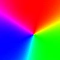
|
NOTE: The above only performed its operations on the hue channel only. For
real image, we would still need to operate (as normal) on saturation and
brilliance channels.
As you can see we now get a correct gradient between the red and blue, though
the method when applied to just primary colors that have a high angular
separation, tends to generate very sudden gradient changes in the middle.
That is while the result is correct the angular hue variation is not linear
for very large changes in hue effects. It would work well for averaging lots
of near hues, but not for these widely spaced primaries.
I even switched to using a stronger 'Inverse Weighting' rather than the more
usual 'Inverse Squared' or 'Shepard's' method (see above) and while it
improved
things, the hue changes were still compressing in the center due to the
non-linear effects.
As the input colors are constant, pre-converting them into hue-x, and hue-y
coordinates, doing the shepard's weighting on those channels, then converting
back again would actually make the process even faster. That is convert
colors from a HSB colorspace to a Hx,Hy,S,B colorspace, to apply the
technique.
If this is done, then central point and even gradient between the points,
would shade to white (the center point of a HSB colorspace). If this was
performed in HSL colorspace that area would shade toward a mid-tone gray.
This conversion from a polar Hue to X-Y coordinates would in some ways be
similar to just doing the calculations in a non-polar RGB space, which shows
that same shade toward gray effects (see previous examples).
So if by using a
Circular Mean we are in fact simply converting a HSB colorspace into
a highly distorted variant RGB, why not just do the task in a linear RGB
colorspace, and saturate the colors, to generate the hue!
magick -size 100x100 xc: -colorspace RGB \
-sparse-color Inverse '50,10 red 10,70 blue 90,90 lime' \
-colorspace sRGB gradient_inverse_RGB.png
magick gradient_inverse_RGB.png -colorspace HSB \
-channel GB -evaluate set 100% +channel \
-colorspace sRGB gradient_inverse_RGB_Hue.gif
|
![[IM Output]](gradient_inverse_RGB.png)
 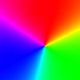
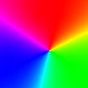
|
The image processing was performed in a linear color space (RGB) to avoid
'sRGB darken' during the blending of such strong primary colors. See Processing Real Images for more
details.
|
As you can see we get practically exactly the same result as before, but with
all the complex 'modulus mathematics' removed. However I am still no closer
to getting a more linear spread of hues between the starting points of color.
The moral of all this is that working with Hues is hard, not only due to the
'red discontinuity', but also because of non-linear effects that happen when
colors are very widely spaced. And in the end the result was the same as if
I have done the task directly linear RGB space and saturating the colors.
Essentially while HSB and HSL colorspaces are fun, they are not linear,
realistic, or practical colorspaces to work with. This is also probably why
very few operations actually work with hue directly.
Generating the Perfect Gradient (mathematically)
Generating perfect mathematical gradient, such as for
Fourier Transforms (which is cyclic),
Image Mapping, or even
Gradient
Mathematics; requires special gradients that is different to the gradients
we have so far looked at.
What do I mean by this? Well here is a small 1x5 pixel
"gradient:"
image, that I have Scaled so you can see
the individual pixel colors.
magick -size 1x5 gradient: -scale 2000% gradient.png
|
|
|
This image creates a gradient that goes from an exact 'white' color along the
very top row, to an exact 'black' color along the bottom most row. It is an
'idealized' gradient, and typically exactly what an user wants, as it actually
contains the actual colors the user specified.
However while this is what an user expects, it is not a mathematically correct
gradient. As discussed in
Image
Coordinates vs Pixel Coordinates pixels actually have an area, and as such
the white pixel at the top of the image represents the center of that pixel,
while the black represents the center of he bottom most pixel. That is not
the edge of the image but 1/2 pixel away from the edge.
Mathematically images start at the edge. As such to generate a perfect
mathematical gradient, you need to specify the color locations at the edge of
the image, in pixel coordinates. As such in image coordinates, the positions
are displaced by 1/2 a pixel, and the image size is exactly the number of
pixels in the image (a distance), rather than a location that is 1 pixel
smaller that the images size.
One way to generate a mathematically perfect gradient is to use
Barycentric Sparse Color (looked at in detail in
the next section) to generate a perfect edge-to-edge gradient...
magick -size 1x5 xc: \
-sparse-color Barycentric '0,-0.5 white 0,%[fx:h-.5] black' \
-scale 2000% gradient_math.png
|
|
![[IM Output]](gradient_math.png)
|
Note that the coordinates used go from
-0.5 to the images height
minus
0.5, That the pixel coordinates of the actual edges of the
image. And if you were to look closely at the results you will find that the
top and bottom most pixels are
not white or black in color. The pixel
is the color of the gradient at the pixels center.
Because this gradient is mathematically correct, this gradient will 'tile'
correctly when used in special 'tiling' or 'cyclic' situations.
The previous gradient image will not 'tile' correctly. You get a pure-white
pixel, next to, the pure-black pixel, so as to generate an one pixel gap or
'disjunction' in the mathematical cycle, in situations where pure white and
pure black are typically regarded as equivalent values.
A simpler way is to generate a "
gradient:" image that is one pixel longer, and chop one pixel,
from either end (according to the current "
-gravity" setting).
For example here chopped the top-most white pixel, as having a black pixel (or
zero value) is often more desirable in the final result.
magick -size 1x6 gradient: -chop 0x1 -scale 2000% gradient_chopped.png
|
|
![[IM Output]](gradient_chopped.png)
|
The resulting gradient image can then be
Rotated as needed, to then generate the required image for later image
processing.
However while this gradient will 'cycle' correctly, the actual position of the
color is not exactly correct. But in many cases this is good enough. If you
need a 'perfect gradient' I recommend you use a sparse color gradient.
In Summery... A little thought about exactly what you want from your
gradient can make a big difference in the accuracy of your final results. But
if it does not matter, than don't worry about it, use whatever is simplest for
the task at hand.
Sparse Points of Color
The "
-sparse-color" operator was added to IM v6.4.3-0 will take an
image and set the color given at each of the given floating point
'
x,y' coordinates. That is of the form...
-sparse-color {method} 'x,y color x,y color x,y color ...'
The rest of the pixels (limited according to the "
-channel" setting) will then be
mapped according to there relation to these isolated points of color, so as to
smooth out the colors between those points. The
method defines what
that relationship will be.
Naturally there are lots of ways to define what the intervening color should
be, and which method you choose really depends on what you are attempting to
achieve.
It can also actually be classed as a completely free-form version of
2-dimensional interpolation (See
Interpolation,
Wikipedia).
Image enlargement, or
Resize is actually
a specialized sub-set of this, but one where you start with a complete fixed
grid of pixels to be enlarged. Unfortunately few of the
Resize Filters or
Interpolate Methods that are specifically designed to dealing with a grid
of points, will translate directly into a free form set of sparsely separated
points of color.
That is to say resize involving incomplete grid just does not work.
This is also related to "Geographical Information System (GIS)" methods where
landscapes are measured using sparsely separated points of height (which are
rarely in a strict grid), with the rest of the landscape being determined
from those isolated points. In a similar situation meteorology often has
isolated points of air pressure and temperature, which then needs to be
interpolated. Typically after interpolation the maps are further processed to
generate 'iso-lines' showing points of equal value (height, pressure,
temperature), producing the various weather maps almost everyone are familiar
with.
In this case you would think of the generated image as being a simple
gray-scale 'height map' of the input data, or perhaps even of all three
variables simultaneously, each to a separate image 'channel'.
Barycentric (triangle gradient)
The "
Barycentric" method, will map three and only three points
into a linear triangle of color. The colors outside this triangle continue as
before. I have marked the input points with a small circle, so that the
colors you see are all the interpolated values that were generated by the
Sparse Color Operator.
magick -size 100x100 xc: -colorspace RGB \
-sparse-color Barycentric '30,10 red 10,80 blue 90,90 lime' \
-colorspace sRGB -fill white -stroke black \
-draw 'circle 30,10 30,12 circle 10,80 10,82 circle 90,90 90,92' \
sparse_barycentric.png
| |
![[IM Output]](sparse_barycentric.png)
|
|
The image processing was performed in a linear color space (RGB) to avoid
'sRGB darken' during the blending of such strong primary colors. See Processing Real Images for more
details.
|
If four or more points are given a 'best fit' will be performed, over all
the points given, and as a result the actual points may not get the exact
color specified for those points.
However be warned that the gradient does not just 'stop' but continues to
change beyond those points. Traditionally a barycentric gradient will be
limited to within the enveloping triangle of the points used to generate it.
For example..
magick -size 100x100 xc: -colorspace RGB \
-sparse-color Barycentric '30,10 red 10,80 blue 90,90 lime' \
-colorspace sRGB -fill white -stroke black \
\( -size 100x100 xc:black -draw 'polygon 30,10 10,80 90,90' \) \
+matte -compose CopyOpacity -magick composite \
-draw 'circle 30,10 30,12 circle 10,80 10,82 circle 90,90 90,92' \
sparse_bary_triangle.png
| |
![[IM Output]](sparse_bary_triangle.png)
|
This is a faster version from Fred Weinhaus, that creates a triangle mask in
the alpha channel, which by default, the
Sparse Color
Operator will not update (due to the default channel settings). All the
colors including fully transparent pixels are however still filled with color,
just alpha masked.
magick -size 100x100 xc:none -draw "polygon 30,10 10,80 90,90" \
-colorspace RGB \
-sparse-color Barycentric '30,10 red 10,80 blue 90,90 lime' \
-colorspace sRGB sparse_bary_triangle_2.png
| |
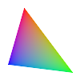
|
|
The triangular masks used above are 1/2 pixel too big due to the way draw
draws an extra line around its shapes. See Draw
Fill Bounds for details. This could be a problem when generating
a generating a triangular mesh of gradients.
|
The '
barycentric' method is in reality a mapping of a linear
affine equation to each of the three color channels separately. As such if I
separate each of the color channels of the above three point example, you get
three simple linear gradients in each color channel.
magick sparse_barycentric.png -separate sparse_bary_%d.gif
|
![[IM Output]](sparse_bary_0.gif)
![[IM Output]](sparse_bary_1.gif) 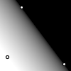
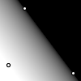
It is only because of the use of primary colors that the above gradients all
were mapped parallel to one of the edges of the triangle. That is not
typically the case. But you will always get a simple linear gradient in each
separate channel of the image, and a flat plane of values in 3D color space.
Barycentric and Two Color Gradients
This parallel effect of the triangular barycentric gradient is actually very
useful. If two of the points were set to the same color, then those to
points will define the 'angle' of the gradient between them and the other
colored point.
For example by making two of the points '
red' the gradient will
be made parallel to the two '
red' points...
magick -size 100x100 xc: -colorspace RGB \
-sparse-color Barycentric '30,10 red 10,80 red 90,90 lime' \
-colorspace sRGB -fill white -stroke black \
-draw 'circle 30,10 30,12 circle 10,80 10,82 circle 90,90 90,92' \
sparse_bary_gradient.png
| |
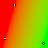
|
Here is the same example but with one of the angle control points moved
to show how it sets the gradient angle.
magick -size 100x100 xc: -colorspace RGB \
-sparse-color Barycentric '50,70 red 10,80 red 90,90 lime' \
-colorspace sRGB -fill white -stroke black \
-draw 'circle 50,70 50,72 circle 10,80 10,82 circle 90,90 90,92' \
sparse_bary_gradient_2.png
| |
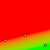
|
Diagonal Gradients
This provides a simple way of generating any linear diagonal gradient using
just two colors.
For example here is a particularly nice way of creating a diagonal gradient,
going from one corner to another corner, for ANY sized input image.
magick -size 600x60 xc: -colorspace RGB \
-sparse-color barycentric '0,0 skyblue -%w,%h skyblue %w,%h black' \
-colorspace sRGB diagonal_gradient.jpg
|
![[IM Output]](diagonal_gradient.jpg)
And to align with the other two corners...
magick -size 600x60 xc: -colorspace RGB \
-sparse-color barycentric '0,%h black -%w,0 black %w,0 skyblue' \
-colorspace sRGB diagonal_gradient_2.jpg
|
![[IM Output]](diagonal_gradient_2.jpg)
These 'diagonal gradients' produce a natural looking gradient even with long
images such as the above. Study the locations of the three color points,
especially the two points of equal color that define the angle of the gradient
between the two corners. Notice that in both cases one of the those points is
not even located within the image itself!
Also note the use of
Percent Escapes to
make the positions automatically adjust to the size of the images on which the
gradient is being drawn.
Two Point Gradients
If only two color points are given, IM will generate the third point for you,
so that the angle is perpendicular between the two original points. The
result is a simple linear gradient over which you have a lot of control.
magick -size 100x100 xc: -colorspace RGB \
-sparse-color Barycentric '30,10 red 90,90 lime' \
-colorspace sRGB -fill white -stroke black \
-draw 'circle 30,10 30,12 circle 90,90 90,92' \
sparse_bary_two_point.png
| |
![[IM Output]](sparse_bary_two_point.png)
|
Two point gradients however do not work very well when applied to
the corners of very 'wide' or 'tall' images (high-aspect ratio). Basically
the gradient is not diagonally aligned, unlike the three point gradients
above. It is angled, just not angled enough to make it 'interesting'.
magick -size 600x60 xc: -colorspace RGB \
-sparse-color barycentric '0,0 skyblue %w,%h black' \
-colorspace sRGB sparse_bary_two_point_wide.jpg
|
![[IM Output]](sparse_bary_two_point_wide.jpg)
Bilinear (4 point gradient)
This method fits an equation to 4 points, over all three color channels to
produce an uniform color gradient between the points, and beyond.
magick -size 100x100 xc: -colorspace RGB \
-sparse-color Bilinear '30,10 red 10,80 blue 70,60 lime 80,20 yellow' \
-colorspace sRGB -fill white -stroke black \
-draw 'circle 30,10 30,12 circle 10,80 10,82' \
-draw 'circle 70,60 70,62 circle 80,20 80,22' \
sparse_bilinear.png
| |
![[IM Output]](sparse_bilinear.png)
|
You can see this '4 point fit' by taking the above image and separating out
the individual color channel gradients.
magick sparse_bilinear.png -separate sparse_bilin_%d.gif
|
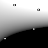
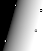
![[IM Output]](sparse_bilin_2.gif)
Note how the equation produces curves (quadratic curves actually). However if
the 4 points form parallel lines, the gradient generated will become linear.
This method is actually equivalent to the
Bilinear Interpolation method (see
Interpolated Lookup Gradients below), when the 4 points are aligned to a
orthogonal (rectangular) grid.
If less than 4 points are given the above function will be replaced by
a 3 point '
Barycentric' method (see
above). If more than four points are given it will do a best fit of all the
points, and thus may not actually match the given color at the point
specified. This is not recommended.
Voronoi (nearest color)
The "
Voronoi" method, just maps each pixel to the closest
color point you have provided. This basically divides the image into a set of
polygonal 'cells' around each point. For example..
magick -size 100x100 xc: -colorspace RGB \
-sparse-color Voronoi '30,10 red 10,80 blue 70,60 lime 80,20 yellow' \
-colorspace sRGB -fill white -stroke black \
-draw 'circle 30,10 30,12 circle 10,80 10,82' \
-draw 'circle 70,60 70,62 circle 80,20 80,22' \
sparse_voronoi.gif
| |
![[IM Output]](sparse_voronoi.gif)
|
As you can see no attempt is made to provide anti-aliasing of the colored
'cells' around each point. The edge of each cell actually falls exactly
midway between each point's nearest neighbours.
This can be used for example to generate masks to cut up the image in various
ways. Just assign one point as white and all the rest as black to extract one
single 'cell' from the image.
If you want to smooth (anti-alias) the result you can either use some form of
Super Sampling to smooth the
image. For example generate one 4 times as big, and "
-scale" it back to the desired
size.
magick -size 400x400 xc: -colorspace RGB \
-sparse-color Voronoi '120,40 red 40,320 blue 270,240 lime 320,80 yellow'
\
-scale 25% -colorspace sRGB -fill white -stroke black \
-draw 'circle 30,10 30,12 circle 10,80 10,82' \
-draw 'circle 70,60 70,62 circle 80,20 80,22' \
sparse_voronoi_ssampled.png
| |
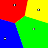
|
|
All the image processing was performed in a linear color space (RGB) to
avoid 'sRGB darken' during the blending of such strong primary colors. See
Processing Real Images for more
details.
|
The simpler way (though not very nice) is to just simply blur the image very
slightly...
magick -size 100x100 xc: -colorspace RGB \
-sparse-color Voronoi '30,10 red 10,80 blue 70,60 lime 80,20 yellow' \
-blur 1x0.7 -colorspace sRGB -fill white -stroke black \
-draw 'circle 30,10 30,12 circle 10,80 10,82' \
-draw 'circle 70,60 70,62 circle 80,20 80,22' \
sparse_voronoi_smoothed.png
| |
![[IM Output]](sparse_voronoi_smoothed.png)
|
By blurring generated image by a large amount you can set up some non-linear
gradients between the 'cells' that was generated.
magick -size 100x100 xc: -colorspace RGB \
-sparse-color Voronoi '30,10 red 10,80 blue 70,60 lime 80,20 yellow' \
-blur 0x15 -colorspace sRGB -fill white -stroke black \
-draw 'circle 30,10 30,12 circle 10,80 10,82' \
-draw 'circle 70,60 70,62 circle 80,20 80,22' \
sparse_voronoi_blur.png
| |
![[IM Output]](sparse_voronoi_blur.png)
|
The larger the "
-blur",
the
larger the gradient between the various 'cells'. However be warned that this
may not preserve small colored cells, or ensure the original point remains the
color that was given, if it is close to the edge (and another point) of a
different color.
By using a special 'linear blur' technique, developed by Fred Weinhaus, you
can
produce a fixed width linear gradient between the cells.
magick -size 100x100 xc: -colorspace RGB \
-sparse-color Voronoi '30,10 red 10,80 blue 70,60 lime 80,20 yellow' \
-blur 10x65535 -colorspace sRGB -fill white -stroke black \
-draw 'circle 30,10 30,12 circle 10,80 10,82' \
-draw 'circle 70,60 70,62 circle 80,20 80,22' \
sparse_voronoi_gradient.png
| |
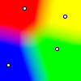
|
The unblurred output could also passed to various
Edge Detection techniques to generate various bounded edges.
You can remap the image via a
Raster to
Vector Convertor to generate vector lines. However I found the default
'
autotrace' settings may need to be adjusted with
"
-corner-threshold 120" so it will detect the corners better.
Shepards (spots of color)
The "
Shepards" method uses a ratio of the inverse squares of the
distances to each of the given points to determine the color of the canvas at
each point. See
More Complex DIY Gradients
above for examples of how the mathematics is performed.
It is a bit like having spotlights of color at each point which interacts
with each other, as the light spreads out to an uniform average of all the
given colors at infinity.
magick -size 100x100 xc: -colorspace RGB \
-sparse-color Shepards '30,10 red 10,80 blue 70,60 lime 80,20 yellow'
\
-colorspace sRGB -fill white -stroke black \
-draw 'circle 30,10 30,12 circle 10,80 10,82' \
-draw 'circle 70,60 70,62 circle 80,20 80,22' \
sparse_shepards.png
| |
![[IM Output]](sparse_shepards.png)
|
|
The image processing was performed in a linear color space (RGB) to avoid
'sRGB darken' during the blending of such strong primary colors. See Processing Real Images for more
details.
|
By surrounding a specific area with a similar color you can generate a plateau
of that specific color, though the boundaries between the edging points may
'leak', and the center of the 'plateau' may sag to form shallow bowl
(depending on distance to other color points).
This method is also what is used to generate a displacement field, such as
what is used in
Shepards Image
Distortions. In that case X and Y displacement vectors is what is being
mapped rather than color R,G,B values.
Inverse (sharp points of color)
The "
Inverse" method is practically identical to
"
Shepards", except that it uses a more direct inverse distance
weighting of the points given. See
More Complex
DIY Gradients above for examples of how the mathematics is performed.
This was a much later addition to ImageMagick version 6.6.9-7.
For example...
magick -size 100x100 xc: -colorspace RGB \
-sparse-color Inverse '30,10 red 10,80 blue 70,60 lime 80,20 yellow' \
-colorspace sRGB -fill white -stroke black \
-draw 'circle 30,10 30,12 circle 10,80 10,82' \
-draw 'circle 70,60 70,62 circle 80,20 80,22' \
sparse_inverse.png
| |
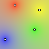
|
As you can see it generates sharp points of color, that quickly merges into
the background 'average color'. In comparison to
Shepards Method which generates rounded spots, with a 'flat' color around
the color points.
It does however work better when generating linear gradients where all
the control points form a line. That is for generating 1 dimensional
gradients along a specific line in the image.
However there is one more point to be made. The speed of how fast these points
of color drops to a near 'average' level is controlled my how close they are.
Placing two point sources close together, and they drop quickly, the further
apart they are and the larger individual colors influence results.
magick -size 100x100 xc: -colorspace RGB \
-sparse-color Inverse '45,45 red 55,55 lime' \
-colorspace sRGB -fill white -stroke black \
-draw 'circle 45,45 45,47 circle 55,55 55,57' \
sparse_inverse_near.png
magick -size 100x100 xc: -colorspace RGB \
-sparse-color Inverse '30,30 red 70,70 lime' \
-colorspace sRGB -fill white -stroke black \
-draw 'circle 30,30 30,32 circle 70,70 70,72' \
sparse_inverse_far.png
|
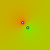
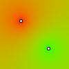
Also if you 'double up' a specific point (exactly on, or just near each other)
with the same or similar color, you will make that color point, twice as
strong.
magick -size 100x100 xc: -colorspace RGB \
-sparse-color Inverse '30,30 red 75,65 lime 65,75 lime' \
-colorspace sRGB -fill white -stroke black \
-draw 'circle 30,30 30,32 circle 75,65 75,67 circle 65,75 65,77 '
\
sparse_inverse_stronger.png
| |
![[IM Output]](sparse_inverse_stronger.png)
|
These effects also applies to '
Shepards'
method too!
Shepards Power Factor
Both the
Shepards and
Inverse
sparse color methods are actually the same but with different 'power levels'
applied to the inverse distance weights. (2.0 and 1.0 respectiavally). As of
IM v6.8.0-10, you can set this power level using an operational
define, '
shepards:power', which
will be used by the '
Shepards' method.
For example
magick -size 100x100 xc: -colorspace RGB -define shepards:power=0.5 \
-sparse-color Shepards '30,10 red 10,80 blue 70,60 lime 80,20 yellow'
\
-colorspace sRGB -fill white -stroke black \
-draw 'circle 30,10 30,12 circle 10,80 10,82' \
-draw 'circle 70,60 70,62 circle 80,20 80,22' \
sparse_shepards_pow0.5.png
magick -size 100x100 xc: -colorspace RGB -define shepards:power=1 \
-sparse-color Shepards '30,10 red 10,80 blue 70,60 lime 80,20 yellow'
\
-colorspace sRGB -fill white -stroke black \
-draw 'circle 30,10 30,12 circle 10,80 10,82' \
-draw 'circle 70,60 70,62 circle 80,20 80,22' \
sparse_shepards_pow1.png
magick -size 100x100 xc: -colorspace RGB -define shepards:power=2 \
-sparse-color Shepards '30,10 red 10,80 blue 70,60 lime 80,20 yellow'
\
-colorspace sRGB -fill white -stroke black \
-draw 'circle 30,10 30,12 circle 10,80 10,82' \
-draw 'circle 70,60 70,62 circle 80,20 80,22' \
sparse_shepards_pow2.png
magick -size 100x100 xc: -colorspace RGB -define shepards:power=3 \
-sparse-color Shepards '30,10 red 10,80 blue 70,60 lime 80,20 yellow'
\
-colorspace sRGB -fill white -stroke black \
-draw 'circle 30,10 30,12 circle 10,80 10,82' \
-draw 'circle 70,60 70,62 circle 80,20 80,22' \
sparse_shepards_pow3.png
magick -size 100x100 xc: -colorspace RGB -define shepards:power=8 \
-sparse-color Shepards '30,10 red 10,80 blue 70,60 lime 80,20 yellow'
\
-colorspace sRGB -fill white -stroke black \
-draw 'circle 30,10 30,12 circle 10,80 10,82' \
-draw 'circle 70,60 70,62 circle 80,20 80,22' \
sparse_shepards_pow8.png
|
![[IM Output]](sparse_shepards_pow0.5.png)
power 0.5
|
![[IM Output]](sparse_shepards_pow1.png)
power 1.0
(inverse)
|
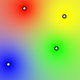
power 2.0
(shepards)
|
![[IM Output]](sparse_shepards_pow3.png)
power 3.0
|
![[IM Output]](sparse_shepards_pow8.png)
power 8.0
|
As you can see the 'spots of color' expand from very sharp points, to rounded
spots, and on to large areas of color. At very high power levels it will
eventually reproduce the same pattern as a
Voronoi Sparse
Color Method.
This
-define not only effects
Shepards Sparse Color, but also will have similar
effects on
Shepards Distortion Method
which is based on calculated displacement maps generated by the sparse color
method. However it does not effect the
Inverse sparse
color method, which always uses a power-level of 1.0.
Summery of Sparse Color Methods
Here is a repeat of the various, 4 point "
-sparse-color" images, for
comparison.
Voronoi
|
Voronoi (blurred)
|
Shepards
|
Inverse
|
Bilinear
|
And here is a summery of the various, 3 point methods.
![[IM Output]](sparse_voronoi_3pt.gif)
Voronoi
|
![[IM Output]](sparse_voronoi_blur_3pt.png)
Voronoi (blurred)
|
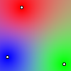
Shepards
|
![[IM Output]](sparse_inverse_3pt.png)
Inverse
|
Barycentric
|
At this time only '
Voronoi', '
Shepards' and '
Inverse' methods are suitable for more than four points.
More "-sparse-color" methods are planned. If you have any ideas
mail them to me.
Channel and Sparse Color
The "
-sparse-color"
operator is effected by the "
-channel" setting which means you can use that setting to limit
its
effects to just a single channel, or expand it to the transparency channel.
You can also use the "
-channel" setting to speed up processing of gray-scale images by
only operating on one channel, then "
-separate" that channel (see
Channel Handling for more detail). For
example..
magick -size 100x100 xc: -channel G -sparse-color Shepards \
'30,10 gray70 10,80 black 70,60 white 80,20 gray(33.3333%)' \
-separate +channel -fill white -stroke black \
-draw 'circle 30,10 30,12 circle 10,80 10,82' \
-draw 'circle 70,60 70,62 circle 80,20 80,22' \
sparse_shepards_gray.gif
| |
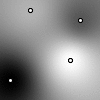
|
As of IM v6.6.8-5 unmodified channels is preserved, as such
you can now use
Sparse Color with the
"
-channel" setting to
add a transparent gradient to any image, quickly and easily.
For example here I add a transparent
Diagonal
Gradient, that is aligned so that 50% transparency is along the diagonal
of the built-in "
rose: image.
magick rose: -alpha set -channel A \
-sparse-color Barycentric \
'0,0 opaque %w,-%h opaque %w,%h transparent' \
rose_alpha_gradient.png
| |
![[IM Output]](rose_alpha_gradient.png)
|
|
The color 'Opaque' is just another name for
'Black'. Basically it is used when you are really only
interested in specifying a fully-opaque color, but the actual color itself
unimportant. Similarly with the color 'Transparent'. I could
have just as easily used 'White' and 'None'
respectively.
|
|
Before IM v6.6.8-5 any channels not selected by the "-channel" setting was reset to
zero (black) values. This severely limited its effective usefulness
|
Sparse Color also accepts normalized floating
point values instead of a color name. Exactly how many values need to be
provided to replace the color name depends on the current "
-channel" setting, and
whether that channel is 'active' in the image being processed. The easiest
way is to limited the processing to a single channel. Also note that when
using raw numbers, rather than color names, transparency values are 'matte'
values (0=opaque) and not 'alpha' values (1=opaque) (for IMv6).
As such in the above I could have used numbers instead of color names...
-channel A -sparse-color Bilinear '0,0 1.0 -%w,%h 1.0 %w,%h 0.0'
|
This may be easier to handle in programmed scripts, and in API's, which may
not have access to the 'colorname' translator.
Sparse Color as a Fill Operator
One of the original reasons for creating the
Sparse
Color Operator, was so that you could give an image containing just a small
number of fixed points of color, and from this 'fill-in' the rest of the
undefined colors.
For example here I have drawn a small number of pixels. The "
+antialias" setting was
specifically turned off so no semi-transparent, or mixed colors have been
drawn, as such the image only contains the four exact colors specified an no
others.
magick -size 100x100 xc:none +antialias -fill none -strokewidth 0.5 \
-stroke Gold -draw "path 'M 20,70 A 1,1 0 0,1 80,50'" \
-stroke DodgerBlue -draw "line 30,10 50,80" \
-stroke Red -draw "circle 80,60 82,60" \
sparse_source.gif
| |
![[IM Output]](sparse_source.gif)
|
Now we can extract the few non-transparent pixels that are present in this
image, then fill in all the other colors using the multi-point sparse color
method, '
Shepards'.
magick sparse_source.gif txt:- |\
sed '1d; / 0) /d; s/:.* /,/;' |\
magick sparse_source.gif -alpha off \
-sparse-color shepards '@-' sparse_fill.png
| |
![[IM Output]](sparse_fill.png)
|
The "
sed" command in the above takes the
Enumerated Text File Format, deletes the first header line and any line
containing transparency, before re-formatting it into a list of pixel
coordinates and colors. That list is then 'pipelined' into the
Sparse Color Operator using the
special "
@-" argument.
Yes the above is very tricky, but works. At least for a very small number of
points. However the more points that are provided, the slower the operation
becomes. This is because
Sparse Color is 'point'
orientated in its processing, rather than image or
Morphology orientated.
Eventually I hope to be able to provide a set of morphology orientated,
'hole-filling' methods, where you can just give the above image as-is and have
it fill in the transparent areas automatically.
This point-extraction technique can be combined with the
EdgeIn Morphology Method to extract the
pixels around the edges of objects or holes, so that you can then 'fill-in'
the missing background or holes (as shown in
Morphology and Channels). For example...
magick figure.gif -channel A -morphology EdgeIn Diamond
shape_edge_pixels.gif
magick shape_edge_pixels.gif txt:- |\
sed '1d; / 0) /d; s/:.* /,/;' | \
magick shape_edge_pixels.gif -alpha off \
-sparse-color shepards '@-' shape_edge_in_lights.png
magick shape_edge_in_lights.png figure.gif -magick composite shape_in_lights.png
|
![[IM Output]](figure.gif)
![[IM Output]](shape_edge_pixels.gif) 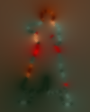
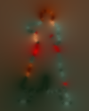
Note that the resulting image is exactly the same as the input, but with the
transparent background replaced with a distance blurred 'edge colors'. This
is why the edges of the image have become in-distinct.
This image was specifically developed to try and generate better 'edge
feathering' techniques. See
Blur Feathering
and
Distance Feathering for
other feathering techniques.
Sparse Color Shepards, a Blur Alternative
One alternative to using "
-sparse-color" is to take the image of pixels on a transparent
background, and
Blur it. Afterward the
transparency is junked.
magick sparse_source.gif -channel RGBA -blur 0x15 \
-alpha off sparse_blur_simple.png
|
![[IM Output]](sparse_blur_simple.png)
The problem with this is that the original colors not preserved, and you also
have the problem of exact what '
sigma' value should be used.
Also it does not take into account just now 'near' each color is, as such two
colored pixels close together (less than the '
sigma' value) will swamp
each other, and become blurred together.
A better method is to generate multiple layers of blurred images with
progressively smaller '
sigma' values, and the original unblurred image
on top.
for sigma in 64 32 16 8 4 2 1 0; do
magick sparse_source.gif -depth 16 \
-channel RGBA -blur 0x$sigma miff:-
done |
magick - -background none -flatten -alpha off sparse_blur_layered.png
|
![[IM Output]](sparse_blur_layered.png)
This layered blurring technique is equivalent to the result of a '
Shepards' method on the same image, though not as
exact, it is very close. However it is likely to be much faster when a lot of
input pixels are involved, as it is image (morphology) oriented, rather than
calculating using individual points.
An other layered blur method is to use
Resize
to generate a 'pyramid' of blurred images. This technique is detailed in
Large Blurs using Resize.
magick sparse_source.gif \
\( +clone -resize 50% \) \
\( +clone -resize 50% \) \
\( +clone -resize 50% \) \
\( +clone -resize 50% \) \
\( +clone -resize 50% \) \
\( +clone -resize 50% \) \
\( +clone -resize 50% \) \
-layers RemoveDups -filter Gaussian -resize 100x100\! -reverse \
-background None -flatten -alpha off sparse_blur_pyramid.png
| |
![[IM Output]](sparse_blur_pyramid.png)
|
This will work very fast with very large images without needing large
'
sigma' values (and thus very slow) for each of the blurring steps.
Essentially it is using a faster image resizing technique to generate the
blurred layers of the previous example. It is not as exact, but will generate
a good approximation of the correct result. However it works best for images
which are a square, and a power of two in size, or it will be less accurate.
The special operator "
-layers
RemoveDups" in the above will remove any extra 'single average pixel'
images that was generated, by the multiple 'clone-resize' operations. The
images are then resize back to the original size using a
Gaussian Resize Filter (the equivalent to
a blur). The image order is then reversed so as to place the original on top,
and the more blurry layers underneath, before flattening together as before.
It has the advantage of only needing to read the image once, doing all the
work in a single command. It also works very quickly even for large images,
especially as the resize only halves the image at each step, and thus avoids
the slow blurring with a very large sigma.
The only disadvantage with this method is that you will need to have a rough
idea of the original size of the image to restore the 'blurred' images, and to
get at least a rough idea of how many resized clones to generate
(Log
2 of the largest dimension, plus 1). However
overdoing the resize clones is not a major performance hit as the resize
simply becomes a 'no-op' when the input image has already been resized down to
the minimal 1 pixel image. The extra and useless 'resized image layers' are
then dealt with automatically using "
-layers RemoveDups".
The only real problem is the possibility of the resized images becoming 'out of
sync' when handling an image that is not a power-of-two in size. How severe
this problem is is not known, but shouldn't be too great, as those images are
also the most blurred.
Of course it still has the 'leakage' problem of the '
Shepards' method, so lets look at this problem in more detail.
Shepards Method 'Leaks'
The '
Shepards' method does not have any
understanding of 'boundaries', and as such colors on the far side of some
'line of color' will leak, or 'bleed thru' past that line. Eventually at
a large distance you will get a pure average color of all the pixels.
This is not always a desirable outcome (though is desirable in some cases).
In this example, the closer the '
Red' curve approaches the
'
White' line, the more the color will 'leak' though the two lines
to the far side producing a pink color.
magick -size 100x100 xc:none +antialias -fill none -strokewidth 0.5 \
-stroke Red -draw "path 'M 26,0 A 55,61 0 0,1 26,100'" \
-stroke White -draw "line 50,0 50,100" \
sparse_lines_near_source.gif
| |
|
magick sparse_lines_near_source.gif txt:- |\
sed '1d; / 0) /d; s/:.* /,/;' |\
magick -size 100x100 xc: -sparse-color shepards '@-' \
sparse_lines_near.png
| |
![[IM Output]](sparse_lines_near.png)
|
This leakage of colors is the main problem with using
Shepards Method for 'hole filling' especially when multiple holes are
involved, as the colors involved with one hole, can and will leak into and
effect the colors in a completely different hole. And visa-versa.
It is an understanding of boundaries that forms the difference between
Shepards Method, and another form of color
'hole-filling' known as '
Color Diffusion'.
Basically with '
Color Diffusion', colors can not pass though a line of
some other defined color. It is achieved by limiting the effect to only
colors in 'line of sight', or to those that leak, around the outside of an
edge. This requires using distance to the nearest colors to limit what colors
influence a pixel.
One major use of '
Color Diffusion' is presented on the
Diffusion Curves
web site. This not only makes heavy use of color diffusion, but also includes
information on techniques for generating diffusions very quickly. I hope to
implement this into ImageMagick at some point in the future.
Plasma Images
Plasma Gradients
While gradients provide a smooth range of colors, another image creation
operator "
plasma:" provides a different sort of gradient. One
that is ideally suited to generating a random backdrop of color for your
images.
First of all I should point out that "
plasma:" is a randomized
image. As such it can and will produce a different image every time it is run.
For example here we generate three separate 'standard' plasma images, and each
image is different from each other, even though the same command was used to
generate them.
magick -size 100x100 plasma: plasma1.jpg
magick -size 100x100 plasma: plasma2.jpg
magick -size 100x100 plasma: plasma3.jpg
|
![[IM Output]](plasma2.jpg)
You can also see that plasma images are also a type of randomized gradient
of colors, and like "
gradient:" started with white at the top and
black at the bottom.
What isn't well document is that you can specify color for the plasma gradient
in the exact same way as you can for linear gradients above.
magick -size 100x100 plasma:blue plasma_range1.jpg
magick -size 100x100 plasma:yellow plasma_range2.jpg
magick -size 100x100 plasma:green-yellow plasma_range3.jpg
magick -size 100x100 plasma:red-blue plasma_range4.jpg
magick -size 100x100 plasma:tomato-steelblue plasma_range5.jpg
|
![[IM Output]](plasma_range3.jpg)
You can also see that mid-tone colors like '
tomato' and
'
steelblue' tend to work better than pure colors like
'
red' and '
blue'.
By using the same color twice with plasma you can produce a background that is
predominantly that color, but with random splotches of colors close to those
of the original colors.
magick -size 100x100 plasma:black-black plasma_black.jpg
magick -size 100x100 plasma:grey-grey plasma_grey.jpg
magick -size 100x100 plasma:white-white plasma_white.jpg
magick -size 100x100 plasma:yellow-yellow plasma_yellow.jpg
magick -size 100x100 plasma:tomato-tomato plasma_tomato.jpg
magick -size 100x100 plasma:steelblue-steelblue plasma_steelblue.jpg
|
![[IM Output]](plasma_black.jpg)
![[IM Output]](plasma_grey.jpg)
![[IM Output]](plasma_white.jpg)
![[IM Output]](plasma_tomato.jpg)
![[IM Output]](plasma_steelblue.jpg)
Again as you can see, mid-tone colors will generate more varieties of color in
the resulting image, than an extreme color, like black, white, or yellow.
The '
grey' plasma in the above is particularly nice giving a
iridescent 'mother-of-pearl' like effect, basically as grey has total freedom
in the colors that the "
plasma:" will generate.
Normalizing a prefect 50% grey plasma will produce a particularly uniform
multi-color plasma image, over the full range of colors, including white and
black.
magick -size 100x100 plasma:grey50-grey50 -auto-level plasma_grey_norm.jpg
| |
|
Alternatively you can just spread the contrast of the colors to just make
them bolder, but without going to extremes.
magick -size 100x100 plasma:grey50-grey50 \
-sigmoidal-contrast 8x50% plasma_grey_contrast.jpg
| |
![[IM Output]](plasma_grey_contrast.jpg)
|
Compare this image with the 'fractal plasma' images below.
Fractal Plasma
The plasma generator also has a special fractal mode, which produces highly
colorful effects. The colors generated are enhanced to produce more
exaggerated color changes.
magick -size 100x100 plasma:fractal plasma_fractal1.jpg
magick -size 100x100 plasma:fractal plasma_fractal2.jpg
magick -size 100x100 plasma:fractal plasma_fractal3.jpg
|
![[IM Output]](plasma_fractal1.jpg)
![[IM Output]](plasma_fractal2.jpg)
In fact this is very similar to the constant color plasma images we have
already seen, and in fact these are generated in the same way but with more
pronounced color changes.
I often find that plasma images are a little 'noisy'. As such they usually
will benefit from a little smoothing using "
-blur".
Here I have have smoothed out the noise from the middle plasma image above.
magick plasma_fractal2.jpg -blur 0x2 plasma_smooth.jpg
| |
![[IM Output]](plasma_smooth.jpg)
|
You can use "-paint" to
create random blotches of color.
magick plasma_fractal2.jpg -blur 0x1 -paint 8 plasma_paint.jpg
| |
![[IM Output]](plasma_paint.jpg)
|
Or make the colors more pronounced and circular using the "-emboss" image operator, after
using "-blur" to remove
the low level noise.
magick plasma_fractal2.jpg -blur 0x5 -emboss 2 plasma_emboss.jpg
| |
![[IM Output]](plasma_emboss.jpg)
|
By using a "-blur"
followed by a "-sharpen" you can produce a more pastel color pattern than we
produced with "-emboss".
magick plasma_fractal2.jpg -blur 0x5 -sharpen 0x15 plasma_sharp.jpg
| |
![[IM Output]](plasma_sharp.jpg)
|
I actually find generating a swirled plasma gradient to be particularly nice,
as a background pattern.
magick -size 160x140 plasma:fractal \
-blur 0x2 -swirl 180 -shave 20x20 plasma_swirl.jpg
| |
![[IM Output]](plasma_swirl.jpg)
|
Greyscale Plasma
Now the plasma generator will always generate color, even on a pure black
solid color. However it is often useful to generate a pure grey-scale plasma.
Well there are two simple ways of doing this.
The simplest way is to take the plasma image and converted it to grey scale.
magick -size 100x100 plasma:fractal -blur 0x2 \
-colorspace Gray plasma_greyscale.jpg
| |
![[IM Output]](plasma_greyscale.jpg)
|
Another way is to copy one of the color channel over the other two, for a
stronger, single layer, effect.
magick -size 100x100 plasma:fractal -blur 0x2 \
-channel G -separate plasma_grey_copy.jpg
| |
|
A final technique is to use "-shade" on the plasma.
magick -size 100x100 plasma:fractal -blur 0x5 \
-shade 120x45 -auto-level plasma_grey_shade.jpg
| |
![[IM Output]](plasma_grey_shade.jpg)
|
You'd probably think you would get a lot of light and shadow effects, but the
raw plasma is so random, that "
-shade" only seems to produce a more 'mottled plasma' effect.
Instead of using a fractal plasma, with its highly exaggerated color changes,
you can create a grey-scale plasma using the constant color plasma method. As
a side effect, this method also allows you to control the overall brightness
of the grey-scale plasma image generated.
magick -size 100x100 plasma:black-black \
-blur 0x2 -colorspace Gray plasma_grey0.jpg
magick -size 100x100 plasma:grey25-grey25 \
-blur 0x2 -colorspace Gray plasma_grey1.jpg
magick -size 100x100 plasma:grey50-grey50 \
-blur 0x2 -colorspace Gray plasma_grey2.jpg
magick -size 100x100 plasma:grey75-grey75 \
-blur 0x2 -colorspace Gray plasma_grey3.jpg
magick -size 100x100 plasma:white-white \
-blur 0x2 -colorspace Gray plasma_grey4.jpg
|
![[IM Output]](plasma_grey0.jpg)
![[IM Output]](plasma_grey1.jpg)
![[IM Output]](plasma_grey3.jpg)
![[IM Output]](plasma_grey4.jpg)
If this is not quite bold enough, use the channel copy method of grey-scaling
the plasma image.
magick -size 100x100 plasma:black-black \
-blur 0x2 -channel G -separate plasma_grey5.jpg
magick -size 100x100 plasma:grey25-grey25 \
-blur 0x2 -channel G -separate plasma_grey6.jpg
magick -size 100x100 plasma:grey50-grey50 \
-blur 0x2 -channel G -separate plasma_grey7.jpg
magick -size 100x100 plasma:grey75-grey75 \
-blur 0x2 -channel G -separate plasma_grey8.jpg
magick -size 100x100 plasma:white-white \
-blur 0x2 -channel G -separate plasma_grey9.jpg
|
![[IM Output]](plasma_grey5.jpg)
![[IM Output]](plasma_grey6.jpg)
![[IM Output]](plasma_grey7.jpg)
![[IM Output]](plasma_grey8.jpg)
These grey-scale plasma images are very useful for further processing,
allowing you to generate other image effects.
For example, look at the page on
Background
Images for a huge number of examples where the plasma fractal was used
to produce lots of interesting effects.
Seeding or Repeating a Plasma Image
Remember "
plasma:" can produce areas of near pure black or pure
white, or any other color (though it isn't likely to be pure). And while it
is unlikely you will get an image that is all in one color, it is also a
possible outcome. So when you get a good result you may like to save it, for
later re-use.
Because of this, scripts using plasma images, may like to include options to
generate and re-use such randomized images. That is you may like to separate
the plasma image generation from other parts that use that image, to allow
re-use.
A simpler technique however is to 'seed' or initialize the IM random number
generator so that 'plasma:' will generate the same 'randomized'
image. That way you can tune a script or program to produce a good or
interesting coloration or effect, over and over.
magick -size 100x100 -seed 4321 plasma: plasma_seeded.jpg
| |
![[IM Output]](plasma_seeded.jpg)
|
The above image will never change, so unless I change the "
-seed" number I will always have a
'red' area in the bottom-right corner.
Interestingly using the same seed with different initializing color gradients
can produce a set of images, which while random, are similar in their internal
pattern.
magick -size 100x100 -seed 4321 plasma:grey-grey plasma_rnd1.jpg
magick -size 100x100 -seed 4321 plasma:white-blue plasma_rnd2.jpg
magick -size 100x100 -seed 4321 plasma:green-yellow plasma_rnd3.jpg
magick -size 100x100 -seed 4321 plasma:red-blue plasma_rnd4.jpg
magick -size 100x100 -seed 4321 plasma:tomato-steelblue plasma_rnd5.jpg
|
As you can see the same pattern of colors is present in all the above images,
though the underlying color base can highlight or obscure parts of the
shared pattern.
Just one final word of warning. Other IM operators can also use the random
number generator, such as the "
-fx" '
rand()' function, the "
-virtual-pixel"
'
random' setting the "
-random-threshold"
dither operator, and the "
-noise" operator. As such is a good idea to seed the generator
immediately before your specific use of the random number generator.
As of IM v6.3.4-3, you can also re-randomize the generator using "
+seed". So placing this setting
after your 'seeded plasma' will ensure that any later operators
correctly generate a randomized result if desired.
By default the seed is randomized when IM starts, so you normally do not need
to randomize it yourself using "
+seed" to get a random result.
Problems using Plasma
One problem that you should avoid with "
plasma:" images is
generating
them with a high aspect ratio. It tends to distort the normal plasma color
effects, pulling the colors out into needle-like streaks.
magick -size 200x50 plasma: plasma_high_aspect.jpg
|
There is no simple solution to this, so unless this is what you are wanting,
caution is advised.
There is also a definite top-left to bottom-right diagonal warp in the plasma
image that should not exist. That is there is some sort of 'spatial bias'
flaw in the algorithm.
For example as Thomas Maus <thomas.maus_AT_alumni.uni-karlsruhe.de>
pointed out if you mirror and append the same plasma image, you will always
see a distinct 'V' in the resulting image...
magick -size 60x60 plasma: \( +clone -flop \) +append plasma_flaw.jpg
|
This should not happen. But the problem seems to be too deep to be able to fix
without basically completely re-writing the whole plasma generator function.
Random Images
Raw Random Noise
As of IM v6.3.5 you can generate a purely random image from an existing image
using Noise Generator, "+noise" method 'Random'.
magick -size 100x100 xc: +noise Random random.png
| |
![[IM Output]](random.png)
|
If your IM is older than this you can still generate a pure random noise image
using the slower DIY FX Operator, "-fx".
magick -size 100x100 xc: -fx 'rand()' random_fx.png
| |
![[IM Output]](random_fx.png)
|
Or for speed you can use the "-spread" operator to randomize a gradient (separatally for the
three color channels) or by using some other image.
magick -size 100x100 gradient: -separate \
-virtual-pixel tile -spread 200 -combine random_spread.png
| |
|
The result may seem very random, but it will produce a more controlled range
of colors, (or just color values).
Random Specks (pixel dust)
Generating images of scattered random pixels can also be very useful. .
just remember that each of the three
Color Channels of a random image can be thought of as separate random
gray-scale image and these channels can be merged together in various ways.
For example you generate a mask of random dots by first Thresholding a color channel
('G' or the green channel), and separating it out as a gray-scale
image.
magick random.png -channel G -threshold 5% -separate \
+channel -negate random_mask.png
| |
|
As each color is a linearly random value, the threshold percentage used in the
above directly defines the density of pixels selected.
You can go further and use one color color channel ('
G' or green
channel) to select random values from another color channel channel
('
R' or red channel), by using various
Image Composition methods.
magick random.png -channel G -threshold 5% -negate \
-channel RG -separate +channel \
-compose Multiply -magick composite random_black.png
magick random.png -channel G -threshold 5% \
-channel RG -separate +channel \
-compose Screen -magick composite random_white.png
magick random.png -channel G -threshold 5% -negate \
-channel RG -separate +channel \
-compose CopyOpacity -magick composite random_trans.png
|
These types of images are directly usable to generate
Glitter Animations. But further processing,
particularly on the black background version, will let you enlarge the dots
based on their gray-scale intensity or generate streaks and or star flares
from those dots. For examples see
Star
Generators.
Like
Seeded Plasma Images you can also use the
"
-seed" setting to
pre-initialise the random number generator. This allows you to generate the
same random image(s) repeatably for a particular machine, just as you can for
plasma images.
Blurred Random Images (random blobs)
Now while you can make direct use of random images to create speckled effects,
purely random images are generally not very useful. But by
Blurring a purely random image you will introduce
some 'neighbourhood' order, such that nearby pixels become related.
For example, here I blur just one random image, causing the random values to
produce larger 'blobs' or mottled colors.
magick random.png -virtual-pixel tile -blur 0x1 -auto-level random_1.png
magick random.png -virtual-pixel tile -blur 0x3 -auto-level random_3.png
magick random.png -virtual-pixel tile -blur 0x5 -auto-level random_5.png
magick random.png -virtual-pixel tile -blur 0x10 -auto-level
random_10.png
magick random.png -virtual-pixel tile -blur 0x20 -auto-level
random_20.png
|
![[IM Output]](random_3.png)
![[IM Output]](random_5.png)
Note however without the
Virtual Pixel
Setting the "
-blur"
operator will have strong edge effects, which are best avoided.
As a bonus by changing the "
-virtual-pixel" setting to '
tile', the randomised
image remains tilable, with the colors wrapping across the image boundaries.
This tiling ability is something that currently not possible with a random
Plasma Images and is an inherent result of pure random
images being so random to start with.
Blurred Random Hues
One particular conversion of a blurred random noise image that I found
particularly pleasing is to map the values into HSB color hues.
magick random_10.png -set colorspace HSB \
-channel GB -evaluate set 100% +channel \
-colorspace RGB random_hues_cyan.png
| |
![[IM Output]](random_hues_cyan.png)
|
The problem with the above is that the blur will tend to create spots of
red-yellow (low values) and red-magenta (high values), with bands of green,
cyan and blues, in between them. This is simply a consequence of the way the
hue values were blurred and leveled.
The ideal solution to this would be a type of modulus-blur, that would take
into account the cyclic nature of the Hue values. However such an operator is
not currently available, and perhaps never will.
The best solution I know of is to simply add all three random channels in the
image (using Modulus-Add Composition) so
as to extend the range of values. This also have a side effect of making the
blurred spots smaller, but at least you now get a more dynamic range rainbow
colors. Anyone got a better idea?
magick random_10.png -separate -background white \
-compose ModulusAdd -flatten -channel R -combine +channel \
-set colorspace HSB -colorspace RGB random_hues.png
| |
|
For more methods of processing a random images, see
Plasma
Images above, as well as
Generating
Backgrounds.
Blurred Random Grays
As you can see from the above you get an image with various blobs of primary
colors. That is because each channel is being processed completely
separately to each other as gray-scale images.
Lets extract one of the channels of each of the above image so you can see the
structure of the blurred image...
magick random.png -channel G -separate random_0_gray.png
magick random_1.png -channel G -separate random_1_gray.png
magick random_3.png -channel G -separate random_3_gray.png
magick random_5.png -channel G -separate random_5_gray.png
magick random_10.png -channel G -separate random_10_gray.png
magick random_20.png -channel G -separate random_20_gray.png
|
![[IM Output]](random_0_gray.png)
![[IM Output]](random_3_gray.png)
![[IM Output]](random_5_gray.png)
![[IM Output]](random_20_gray.png)
The first thing that you should notice is that the image will generally (but
not always) contain roughly equal amounts of both black and white areas. You
can see this if we
Threshold the random
images at 50%
magick random_0_gray.png -threshold 50% random_0_thres.png
magick random_1_gray.png -threshold 50% random_1_thres.png
magick random_3_gray.png -threshold 50% random_3_thres.png
magick random_5_gray.png -threshold 50% random_5_thres.png
magick random_10_gray.png -threshold 50% random_10_thres.png
magick random_20_gray.png -threshold 50% random_20_thres.png
|
![[IM Output]](random_1_thres.png)
![[IM Output]](random_10_thres.png)
![[IM Output]](random_20_thres.png)
As you can see you get approximately 50% white and 50% black areas, separated
by a curvy line. Also the curve of this line varies according to the
'
sigma' value used for the blurring of the purely random image. From
individual pixels generating a black and white 'snow' until you get a very
uniform (though still random) separation of the image into two black and white
areas.
For more examples of using random images, see
Background Images or to have a look at generating randomised canvases,
see
Random Spots of Solid Color.
Random Granularity (order in the chaos)
Now remember all the blurred random images were generated from the same
initial random image, thus they are all related. But every new random image
generated will have a completely different pattern, though the patterns will
more or less look similar in structure.
But first lets give a full example of generating a 'blured random image'
from scratch...
magick -size 100x100 xc: -channel G +noise Random \
-virtual-pixel Tile -blur 0x5 -auto-level \
-separate +channel random_5_gray.png
| |
|
The heavy use of the "
-channel"
setting to limit operations to the 'Green' channel of the image is important
as it speeds up the overall generation of the image by a factor of 3.
The
Channel separate will then ensure we
get a pure grayscale result.
If you want you could leave out both "
-channel" settings, which will
result in the generation of 3 completely separate and different 'Blurred
Random Images'.
The image has some important characteristics, which we can see more clearly if
we divide the image up into three equal sets of colors (using a technique
called
Posterization), you can see that
inside each of the black and white zones you get more circle blobs or
'granules'.
For example...
magick random_5_gray.png -ordered-dither threshold,3 random_5_blobs.png
| |
|
First I would like to point out how we get roughly equal amounts of light and
dark areas within the image, but that those areas are interconnected by the
grey 'middle' colors of the gradient that forms between the light and dark
areas.
Now the individual blobs or 'granules' varies from area to area across the
image, but they all roughy average at about a diameter of about
three to
four times the value used to blur the initial random image.
This blur value is known as the '
granularity' of the image is a very
important value, as it basically represents the average size of the circular
structures the random image produces.
Some times it is called the 'curviness' of the image. The larger the value
the larger and slower these curves are within the image.
This is the most important factor describing a Blurred Random image, so lets
make it very clear...
The 'Granularity' of a random image (or blur factor)
determines the size of the circular structures within
Of course the smaller the 'blur factor' or '
Granularity', the smaller
or tighter the curves become, until you reach a value of '
0', at
which point, all the clumping or 'blobs' within the image vanishes, and you
are least with a purely random 'noise', 'snow', or 'pixel dust' type of
effect.
ASIDE: Actually the size of the actual 'granules' themselves can vary
depending on the threshold factor used to generate them. What the factor
really describes is the average distance between centers of the white and
black areas. The larger the value the larger the distance, and the larger and
more spread out the spots have to be to accomidate that increased distance.
This becomes more obvious when we start looking at
Random Ripples below.
You may also like to try using a 50%
Solarize operation with some extra
Level Adjustments to extract both the well separated black and white
granules from the image.
For example, here is a full example with a granularity of '8' and
a blob threshold of '25%' generating white spots from both black
and white parts of the image.
magick -size 100x100 xc: -channel G +noise random \
-virtual-pixel tile -blur 0x8 -auto-level \
-solarize 50% -separate +channel \
-threshold 25% -negate random_granules.png
| |
![[IM Output]](random_granules.png)
|
Be warned that as the value gets larger, the time to generate the blurred
random image also gets much much longer. Also when the value reaches about
half that of the size of the smallest image dimension, the effect stops
growing as the random image settles into a single white and black spot. Large
values are not recommended.
![[IM Output]](animated_granularity.gif)
To finish with, to the left is shown a
Patrol
Cycle Animation resulting from varying the 'granularity' (random blurring)
of a single random image. The animation was generated using the shell script
"
animate_granularity", which
you can download, study and play with.
Note that as the same random image is used as a source the 'granules' or spots
do not really move, but just sort of grow together, or fade away, so as to
produce larger 'granules' with increasing granularity.
Also remember that while I have reduced the number of colors in the animation,
the structure of the full random image is actually smooth gradient between two
sets of white and black granules. This gradient is what makes the image
useful in other techniques.
Random Flux (animation cycles)
Now as you saw above the granules or spots do not actually move all that much.
But for animation effects you want a pattern that moves smoothly in time.
Also you don't want that pattern to just simply move back and forth. And
finally, you do not want that pattern of movements to suddenly jump or jerk as
the animation loops.
So what we need is some way to generate a smoothly repeating random pattern. A
tall order. Also as you need it to be smooth, you will need to generate all
the patterns from the same single random image.
Here is an idea that allows you to generate such a random pattern.
Rather than think of each random pixel value as being a random intensity, we
instead think of that value being a 'time' value defining when that pixel is
at its maximum or minimum intensity. That is, we magick that value into
a position on a 'wave'. Thus each pixel represents some 'phase' of a sine
curve.
This sounds complicated, but in reality it isn't. We just use the
Random Image as a source image for a
Sinusoid Function. Now for each
image in the time sequence we set the time '
phase' for that particular
point in the time cycle.
magick random.png -function Sinusoid 1,{time} \
... do granular blurring, and other processing ...
|
Where '
{time}' goes from '
0' to
'
360' over the complete animation cycle.
The result is that instead of each pixel having a 'static' random value, we
now have one that cycles in a loop between black and white over a period of
time. Each pixel will follow this same cycle, but as each pixel has
a completely different 'phase', and will cycle independently of all the other
pixels. That is, the image is still random, but smoothly changing with the
provided 'time' value.
For the scientifically minded this is a bit like looking at the 'quantum flux'
that exists at sub-atomic level, where space is far from the 'static' state we
see at normal scales. Hence the name '
Random Flux'.
For example lets generate a time sequence of 12 images...
for i in `seq 0 30 359`; do
magick random.png -channel G -function Sinusoid 1,${i} \
-virtual-pixel tile -blur 0x8 -auto-level \
-separate flux_${i}.png
done
|
And your one random image can now generates a whole sequence images forming a
cycle.
Note that the 'time' extraction has to happen before any other processing such
as blurring, which is probably the slowest part of the whole generation
process.
The other thing to notice is that at phase '
180' (bottom right),
you actually get the exact negative of the first image (top-left). That is
'white' granules has become 'black' granules, and visa-versa. In fact the
whole second half of the animation is actually the negative of the first half.
This can be used to cut down the generation time of a simple 'Random Flux'
animation.
Because the image is a negative at a 180 degree phase, you will find that each
'white' granule slowly moves so as to swap places with a neighbouring 'black'
granule. But as the whole second half is a negative of the first the it can't
just simply shuffle back-and-forth, but must continue move forward to return
to the original image, or circle around in a loop, or simply fade and appear
appropriatally.
In other words the white and black granules move in far more complex cycle.
To the right is an animation of the above frames...
The fluctuating pattern is completely random, but smoothly changing from frame
to frame, and when the animation loops. You can see no beginning or end to
the result. Sometimes you will get a swirling of movement, other times it
looks like all the 'gas' like blobs are being sucked into a dark zone, or just
appearing and fading away again. You also get periods of very fast movements,
as well as very slow movements. It is totally random.
In summary: The same properties present in
Blurred
Random Images are also present in this animation. The image remains a
roughly equal division between white and black segments, and it forms blobs of
about
three times the size of the blur or
Granularity of the image. But on top of this you are guarantied that all
parts of the image will form some cycle between both lighter and darker
colors, as half the cycle is the negative of the other half.
One thing you may not have noticed is that due to the conversion of a random
linear value into a sinusoid waveform, you will get a sharper white and black
separation of colors (contrast). As such you may like to use the
de-contrasting aspect of
Sigmoidal
Contrast operator to make the resulting image less 'blob' like, and
enhance the gradient between the granules, rather than the granules
themselves.
Now this is only a starting point for what you can do with a cyclic random
animation. Everything that you can do with a
Random
Image, such as described in
Generating Backgrounds, can also be applied to '
Random Flux
Animation'
For example, lets just show the movement of just the 'white' granules...
magick flux_anim.gif -threshold 70% flux_thres_anim.gif
| |
![[IM Output]](flux_thres_anim.gif)
|
Or generate changing electrical filaments that slowly flow over the image.
magick flux_anim.gif \
-sigmoidal-contrast 30x50% -solarize 50% -auto-level \
-set delay 20 filaments_anim.gif
| |
|
Note that due to fact that half the cycle is a negation of the first half and
we use a
Solarize to fold the white and
black colors in half, the cycle is actually repeating twice over one animation
cycle. It really needs a lot more frames to remove some of very fast changes
that is taking place.
To make the motion less predictable for a longer cyclic sequence, you can also
use some
Gradient Math to combine
multiple Sinusoidal Cycles, from multiple random images, or even just using
the other color channels of the same random image.
FUTURE: Create even less predictable, long time 'harmonic' cycles.
Random Ripples
By adding another variation to a
Blurred Random
Image we can add another level of complexity that makes these images
far more useful, and gives use another control variable beyond its
Granularity.
But first you need to remember that the random image does not consist of just
bright and dark areas, but also contains a slope between those areas. Using
that slope as into to the
Sinusoid
Function, you can generate ripples between the spots in the image.
Note that key difference to this use of the
Sinusoid Function to the previous
Random Flux examples was that this time the
function is being applied to the image AFTER it was smoothed using blur,
instead of before. Also in this case it is the '
Frequency' value, and
not the second '
Phase' value that is more important.
For example...
magick random_10_gray.png -function Sinusoid 1,90 ripples_1.png
magick random_10_gray.png -function Sinusoid 2,90 ripples_2.png
magick random_10_gray.png -function Sinusoid 3,90 ripples_3.png
magick random_10_gray.png -function Sinusoid 4,90 ripples_4.png
|
![[IM Output]](ripples_2.png)
![[IM Output]](ripples_4.png)
As you can see the larger the '
Frequency' of the
Sinusoid Function, the more
ripples are being added into the gradient between the 'granules'.
A '
Frequency' of '
1' will basically magick both the Light
and Dark 'blobs' in the source image to white, and leave a dark gap between
them. A '
Frequency' of '
2' squeezes an extra 'ridge' or
'ripple' in that dark gap. As the frequency increases you get more and more
'ripples' between the lightest and darkest areas of the original image, making
it more an more complex.
As the number of ridges increases, you can lose sight of the original 'blobs'
or 'granules' in the image. You can fix this by modifying the gradient before
adding the ripples, either by 'clipping' the gradient using a
Level Adjustment, or compress the midtones
using
Sigmoidal Contrast.
This will give the 'granules' some mass or area, providing areas of 'calm'
between the ripples.
magick random_10_gray.png -level 25% random_enhanced.png
magick random_enhanced.png -function Sinusoid 4,90 ripples_4e.png
magick random_10_gray.png -sigmoidal-contrast 10,50% random_sigmoidal.png
magick random_sigmoidal.png -function Sinusoid 4,90 ripples_4s.png
|
Both methods have advantages and disadvantages, but in essence they will
enlarge granules, though not the distance between the white and black sets of
granules. The side effect of this is of course a compression the ripples
between the two sets of granules.
The second value '
90' used above examples is the '
Phase'
of the
Sinusoid Function. It
will determine the color that the 'black' granule in the source image will
become in the 'rippled' image.
magick random_enhanced.png -function Sinusoid 3,0 ripples_3e000.png
magick random_enhanced.png -function Sinusoid 3,90 ripples_3e090.png
magick random_enhanced.png -function Sinusoid 3,180 ripples_3e180.png
magick random_enhanced.png -function Sinusoid 3,270 ripples_3e270.png
|
![[IM Output]](random_enhanced.png)
The color of the 'white' granule, will depend on both the '
Phase', and
the fraction of the '
Frequency' that use applied. An integer
'
Frequency' value will cause both white and black granules to vary in
color together (according to the '
Phase'). as such with a pahse of
'
90' both will be white.
However if you apply a fractional 'Frequency' value of say
'0.5', the 'white source' granule, will be the negative of the
'black source' granule (as determined by the 'Phase').
magick random_enhanced.png -function Sinusoid 3.5,90 ripples_3.5e.png
| |
|
Note for the 'gray' '
Phase angles, one of granules is surrounded by
a white ring, while the other is surrounded by a black ring. If
a '
Frequency' value with a '
0.5' fraction is used, the
first ripple around each spot will be all white or all black, depending on the
'
Phase' used.
|
Other 'Frequencies' other than integers, or '0.5' are not
recommended as the two sets of granules will not be synchronized in some
way.
Similarly Phases other multiple of 90 degrees are not recommended unless
generating a 'ripple animation' (see below).
A Phase value of '0' is recommended when generating
a 'Dispersion Maps' (see below) as this will cause minimal distortions
within the enhanced 'granule' areas.
|
As previously in
Random Flux, you can modify the
'
Phase' with time so as to generate an animation of the ripples moving
from one set of granules to the other. This works particularly well without
any contrast enhancement.
for i in `seq 0 30 359`; do
magick random_10_gray.png -function Sinusoid 3.5,${i} miff:-
done |
magick miff:- -set delay 15 -loop 0 ripples_anim.gif
| |
|
ASIDE: the technique used in the above is known as a "Pipelined
MIFF:" and is possible as the
MIFF:" file format can simply 'concatenate' images
to generate a multiple image file.
One point is that the animation seem to change much much slower than a
Flux Animation we created above. That is because
over the one animation cycle a ripple will only travel a short distance, where
in a 'flux' animation thge change will travel from the large scale white to
black granules in just half the cycle and back again.
Now you can combine the above ripple animation with an underlying 'flux'
animation from the same random image source to generate a much more dynamic
and flowing form, but be warned of that animation speed difference.
For example here I just take the previous Flux
Animation created above, and add ripples to it. The ripples will in this
case move only because the gradient in the flux animation moves.
magick flux_anim.gif -function Sinusoid 3.5,0 flux_rippled_anim.gif
| |
![[IM Output]](flux_rippled_anim.gif)
|
You can also magick animate the ripples within the animation. Though you may need to
use a much larger 'phase cycle rate' (the 'j = 5 * i' expression) for the
ripples themselves. Also as you are generating a cycle within a cycle, you
will need to generate a much longer animation 60 frames in this case. However
that has the benefit of slowing the larger 'flux' movements down too.
for i in `seq 0 10 359`; do
j=`expr $i \* 5`
magick random.png -channel G \
-function Sinusoid 1,${i} \
-virtual-pixel tile -blur 0x8 -auto-level \
-function Sinusoid 2.5,${j} \
-separate +channel miff:-
done |
magick miff:- -set delay 15 -loop 0 ripples_flux_anim.gif
| |
|
Note in the second image how ripples seem to first come out from one point,
then later they start back going into the same point, though they never just
simply reverse direction. A better multi-cycled flux cycle generator should
remove this slight weirdness by removing the 'negative' effect in the flux
underlying flux animation.
FUTURE: Use of Rippled Random Images for Dispersion Mapped Distortions.
Tiled Canvases
Tile images can be very large or very small, are designed to fit together
side-by-side and vertically to cover large areas of space.
Thanks to the World Wide Web, there as been an explosion of tile images
available for use (finding what you want is another matter). Below are a set
of tiled images which I copied from
Anthony's Icon
Library
for use through out these example pages.
![[IM Output]](../images/bg.gif)
bg.gif
|
![[IM Output]](../images/tile_aqua.jpg)
tile_aqua.jpg
|
![[IM Output]](../images/tile_water.jpg)
tile_water.jpg
|
![[IM Output]](rings.jpg)
rings.jpg
|
![[IM Output]](../images/tile_disks.jpg)
tile_disks.jpg
|
![[IM Output]](../images/tile_weave.gif)
tile_weave.gif
|
Currently there are quite a number of way in which you can tile an image, over
a large area.
You can "
-tile" any image
so
as to completely replace the original background image (using the
"
Copy" compose operator). (For more details see
Tile Compositing).
magick composite -tile tile_weave.gif -size 60x60 xc:none tile_copy.gif
| |
|
Another way is to read in the tile image using the "tile:" coder,
and tile it to a specific size.
magick -size 60x60 tile:bg.gif tile_size.gif
| |
![[IM Output]](tile_size.gif)
|
|
Note that the "tile:" coder will replace any transparency
in the image with the current background color. That is because internally
it generates a canvas of the size requested and 'overlays' the tiling image
onto that canvas.
If you want to preserve transparency either set "-background
none" or "-compose SRC" (see Src Compose Method for details).
|
You can use this to generate a tiled image much larger than you need, then use
"
-composite" to
overlay
it over the original image. If the tile image is partially transparent then
a '
Over' "
-compose" method will need to be
specified. It is a very slow method of tiling, particularly for large images,
and you have the problem of determining just how big an image you need to
create for the overlay.
magick test.png -size 200x200 tile:tile_disks.jpg \
-magick composite tile_over.gif
| |
![[IM Output]](tile_over.gif)
|
By specify a tile as 'tile fill pattern' for the "
-draw" operator, you can draw the
tile image over another image, to create any shape or figure you like.
This is because the "
-tile" setting will override any of the "
-fill" color setting used by draw.
See
MVG Drawing Settings.
magick -size 60x60 xc: -tile tile_aqua.jpg \
-draw "circle 30,30 2,30" tile_draw.gif
| |
|
This only works for "
-draw" and operators like "
-annotate" that also make use
of "
-draw" to perform
their function. It will not work for image operators that use "
-fill" color directly, like
"
label:", "
caption:", and "
text:".
However "-draw" has
built in to it some special color primitives,
such as completely resetting all the pixels in the image to the fill color or
tile pattern (if set).
magick test.png -tile tile_water.jpg -draw "color 0,0 reset" \
tile_reset.gif
| |
![[IM Output]](tile_reset.gif)
|
This is actually exactly the same method as used by some
Solid Color Canvases methods using a
Specific
Color. Only here we used "
-tile" instead of a "
-fill" color.
A more advanced method is to use a
Distort
Operator with a special
Distort
Viewport setting, that was set to the size of the original image (using
a
Defined Global Artifact and
Percent Escapes).
This basically maps the smaller tiles
Virtual
Pixels, that surrounds the small tile image, to generate the larger tiled
canvas.
magick rose: -set option:distort:viewport '%g' +delete \
tree.gif -virtual-pixel tile -filter point -distort SRT 0 \
tile_distort_sized.gif
| |
![[IM Output]](tile_distort_sized.gif)
|
See
Tiling via Distort (below) where we will look
at this same technique to tile an image that is already in memory.
Offset Tiling Canvases
Sometimes you need a little more control over the exact positioning of a
background texture, either for aligning a tile pattern with some other image,
or to avoid a bad correlation with some other part of the final image. For
many of the standard tiling methods this can be achieved using the "
-tile-offset" setting.
For example, here I roll the tile image being used to directly create a tiled
canvas image using "
tile:" or "
pattern:".
magick -size 80x80 -tile-offset +30+30 tile:rose: offset_tile.gif
magick -size 80x80 -tile-offset +20+20 \
pattern:checkerboard offset_pattern.gif
|
![[IM Output]](offset_tile.gif)
|
Tile Offset setting was broken before IM
version 6.3.9-9 in that the 'X' offset was being used for both 'X' and 'Y'
offset values (the given 'Y' value was ignored). This means that while the
above examples would have worked (both X and Y offsets are the same) you may
not get the expected results when the two values differ.
|
This also works for the "montage" background
"-texture"
setting.
magick montage tree.gif -geometry +24+24 \
-tile-offset +30+30 -texture rose: offset_texture.gif
| |
![[IM Output]](offset_texture.gif)
|
You can also use the setting by defining it before the "-tile" or "-fill" setting. For example...
magick -tile-offset +30+30 -tile rose: \
-size 80x80 xc: -draw 'color 30,20 reset' offset_tile_fill.gif
| |
|
However there is one major problem with offset tiling.
The problem is that due to the use of
Legacy
Command Line Style, the above will fail when using built-in
"
pattern:" tiles. For example here I tried the same thing as the
above using a '
checkerboard' tile pattern.
magick -tile-offset +20+20 -tile pattern:checkerboard \
-size 80x80 xc: -draw 'color 30,20 reset' offset_pattern_fail.gif
| |
![[IM Output]](offset_pattern_fail.gif)
|
What is happening is that the first real 'operator' in the above is
'
xc:', all the other options given before this are simply
'settings' that is used by that and later operators. Because of the
Legacy Command Line Style reads in all the
'settings' and applies them before actually processing the command line in the
correct order.
Because of this 'legacy problem' the "
-size" setting gets set BEFORE
the "
-tile" setting
applies the "
pattern:" operator. As a consequence a 80 by 80
pixel 'tile' was generated. This pre-sized tile is then rolled by the
"
-tile-offset"
option, when it is applied by the '
xc:' operator.
In other words the "
-tile" setting will create a 80x80 pixel tile, AFTER the -size
setting has been defined, and as such the 'tile' is no longer tilable, when
used by the draw command.
This is probably one of the few examples where this legacy handling is
detrimental to normal IM 'do it as you see it' option handling by IM commands.
The solution to all this is to ensure that the "
-size" setting is reset before
defining the "
-tile"
image, but after any other image has been read in, and thus satisfying IM
legacy option handling.
magick -size 80x80 xc: \
-tile-offset +20+20 +size -tile pattern:checkerboard \
-draw 'color 30,20 reset' offset_pattern_good.gif
| |
![[IM Output]](offset_pattern_good.gif)
|
In any case it is probably best to define the tile offset and tile image just
before its first use, which has the same result as the above solution.
Tiling with an Image already In Memory
Tiling an image you have in memory (created or modified) is not
straight forward, and only a few indirect methods are available.
Clone and Append the Tile Image
If you are not worried about the exact size of the tiled image, you can
just append the image together multiple times.
For example here we tile the image in a 3x3 array.
magick tree.gif \
\( +clone +clone \) +append \
\( +clone +clone \) -append \
tile_clone.gif
| |
|
This method of tiling has the advantage of allowing you to flip-tile
(mirror tile) the image.
magick tree.gif \
\( +clone -flop +clone \) +append \
\( +clone -flip +clone \) -append \
tile_clone_flip.gif
| |
![[IM Output]](tile_clone_flip.gif)
|
In general this method is only practical when you have some idea of how
big the image being tiled is. Also as clones are actually very fast and
efficient it is a fairly simple and fast tiling method, especially if you
use the results to further tile the larger image.
Tile using MPR: (Memory Program Register)
A better method is to save the image into a special 'In Memory' file format
"
mpr:", or named 'memory program
register'.
From this register you can then either use a "
-tile" setting, or use the special
"
tile:" image file reader, both of which can only be set from
a 'saved' image file format.
For example using "tile:" to create a tiled image of a specific
size...
magick tree.gif -write mpr:tile +delete \
-size 100x100 tile:mpr:tile tile_mpr.gif
| |
|
|
Remember that the "tile:" coder will replace any transparency
in the image with the current background color. (see above)
|
Or tile over an existing image, by setting the "-tile" or "-fill" fill pattern, and using
"-draw" to do a color
reset (see Color Fill Primitives)...
magick tree.gif -write mpr:tile +delete \
granite: -fill mpr:tile -draw 'color 0,0 reset' \
tile_mpr_reset.gif
| |
![[IM Output]](tile_mpr_reset.gif)
|
|
If tiling with an image containing transparency, ensure the destination
image also has transparency by using "-alpha set". If you
do not the resulting image will show the tiles 'hidden' transparency color.
|
Or draw using some other Draw Primitive,
such as a circle, using the fill pattern.
magick tree.gif -write mpr:tile +delete \
granite: -tile mpr:tile -draw 'circle 64,64 10,50' \
tile_mpr_fill.gif
| |
|
The name given after "
mpr:" can be
anything you like, it is only a label on 'mpr' register name used to store the
image, (in memory). It can even be a label, number, color, or even
a filename.
Tiling using Virtual Pixels via Distort
In this method we use the
Virtual Pixel
Setting to generate a large tiled canvas. This setting defines how
the area surronding the actual image (outside the normal image bounds) should
look.
The easiest way to extract virtual pixels is to use the
Distort Operator with a special
Distort Viewport setting.
magick tree.gif -set option:distort:viewport 100x100+0+0 \
-virtual-pixel tile -filter point -distort SRT 0 \
tile_distort.gif
| |
![[IM Output]](tile_distort.gif)
|
You also have access to other styles of virtual pixel tiling settings, such as
'Mirror', or even 'CheckerTile', and even good offset
tiling control using the viewport setting.
magick tree.gif -set option:distort:viewport 100x100-10-10 \
-background firebrick -virtual-pixel CheckerTile \
-distort SRT 0 +repage tile_distort_checks.gif
| |
|
By using the
General Distortion
Operator in this way, you also have the added bonus of distorting the
tiled image in some very complex ways. You can see examples of this in
Distort Affine Tiling.
As a more complex example, here I use an
Arc
Distortion to tile the tree around the origin which is centered in the
viewport. The '
45' specifies the angle the width of the tree
covers, while the '
50' defines the radius for the top edge of
the tree tile. The rest just follows from this.
magick tree.gif -set option:distort:viewport 100x100-50-50 \
-virtual-pixel tile -distort Arc '45 0 50' +repage \
tile_distort_polar.gif
| |
![[IM Output]](tile_distort_polar.gif)
|
Modifying Built-in IM Patterns/Tiles
See the full list of
ImageMagick Built In Images and Patterns. There are a lot of such
patterns, but I'll only look at one or two here.
Now the built-in patterns are generally very very small images, which can tile
to cover large areas. However, on their own they are very plain looking and
rather useless. For example, here is one of the larger more interesting
patterns that is provided...
magick pattern:checkerboard pattern_default.gif
| |
![[IM Output]](pattern_default.gif)
|
Pattern images are usually tiled over an larger areas, either as part of
canvas
creation, by setting a "
-size", or as a fill tile (see
Tiled Canvases
above). Without a size setting the default tile size of the pattern will be
used,
30x30 pixels in this case.
Now you will probably notice that all the patterns currently provided by IM
are all pure black and white, with the single exception of the
'
checkerboard' pattern I used in the last example.
Here is one pattern I particularly like to use as a tile pattern...
magick -size 60x60 pattern:hexagons pattern_hexagons.gif
| |
|
If you are not happy with these colors you can replace them using the
"
-opaque" image
operator.
magick -size 60x60 pattern:hexagons \
-fill blue -opaque black -fill skyblue -opaque white \
pattern_colored.gif
| |
![[IM Output]](pattern_colored.gif)
|
If you want to color the "
checkerboard" pattern, then that is
best done by first using "
-auto-level" to map the two greys to black and white before
substituting those two colors. Here instead of using "
-opaque" to replace the colors,
I use a "
+level-colors" operator (add IM v6.2.4-1), which is a bit simpler
to use.
magick -size 60x60 pattern:checkerboard -auto-level \
+level-colors red,blue pattern_color_checks.gif
| |
|
You can also use "
-floodfill" operator to color the pattern. However for this to
work properly you need to do this,
before you tile the modified
pattern. In this case I also need to expand the tile three times to color it
with the regular pattern of colors I wanted.
magick -size 30x54 pattern:hexagons \
-fill tomato -opaque white \
-fill dodgerblue -draw 'color 10,10 floodfill' \
-fill limegreen -draw 'color 10,25 floodfill' \
-roll +15+27 \
-fill dodgerblue -draw 'color 10,10 floodfill' \
-fill limegreen -draw 'color 10,25 floodfill' miff:- |\
magick -size 100x100 tile:- pattern_color_hexagons.gif
| |
|
I used a pipeline of two commands in the above to separate the colored pattern
creation, from its actual usage. If you like to do this with a single command
see
Tiling an Image In Memory above.
You can also warp and distort a simple tiling pattern to produce an interesting
variations. For example a 'wrinkling' effect (technique courtesy of the
wrinkle IM effect from Font Image
Generator) on a hexagon pattern I found particularly interesting
magick -size 160x100 pattern:hexagons \
-wave 3x100 -background white -rotate 90 -wave 4x66 -rotate -87 \
-gravity center -crop 120x90+0+0 +repage pattern_distorted.gif
| |
![[IM Output]](pattern_distorted.gif)
|
Modifying Tile Images
The biggest problem people face with modifying tiles, whether it's an existing
tile, or one of the built in patterns, is that many image operations destroy
the 'tilability' of the image.
For example, here I have taken the built-in '
hexagon' pattern,
and
tried to modify it to produce a shaded gray-scale pattern of wide hexagonal
lines.
magick pattern:hexagons -rotate 90 \
-blur 0x1 -edge 1 -negate -shade 120x45 \
miff:- |\
magick -size 100x100 tile:- tile_mod_failure.jpg
|
|
![[IM Output]](tile_mod_failure.jpg)
|
The first command generates the 'tile image' while the second actually tiles
the image, so we can see how they all fit together.
As you can see the resulting tile image does NOT tile properly, with
artificial edge distortions clearly visible in the tiled image. Basically we
lost the uniformity of the original tile, along the edges of the image.
One solution is to use a special
Virtual
Pixels setting, which is used to make operators think the image wraps
around the edges, when looking up colors that are beyond the bounds of the
actual image proper.
magick pattern:hexagons -rotate 90 -virtual-pixel tile \
-blur 0x1 -edge 1 -negate -shade 120x45 \
miff:- |\
magick -size 100x100 tile:- tile_mod_vpixels.jpg
|
|
![[IM Output]](tile_mod_vpixels.jpg)
|
Here is another example where I join two related tile patterns together, and
use various effects to create unusual brick wall tile.
magick pattern:leftshingle pattern:rightshingle +append \
-virtual-pixel tile -blur 0x0.75 -resize 150% -shade 100x45 \
-fill Peru -tint 100% miff:- |\
magick -size 100x100 tile:- tile_slanted_bricks.jpg
|
|
![[IM Output]](tile_slanted_bricks.jpg)
|
Alternative
There is an alternative to relying on
Virtual Pixels.
Basically we provide the 'virtual edge pixels' ourselves before operating
on the image, so as to avoid any edge effects that may be present. And that
is done by tiling the image over a slightly larger area first. After
modifying the image, we can re-extract the tile, avoiding the edge distortions
that were introduced.
It does not have to be lot bigger, depending on the extent of the image
operations being performed. I have found 15 to 40 pixels should stop all edge
effects in the final result.
To re-extract the image we can either "
-shave" off the extra pixels, or
"
-crop" the original tile
size from the middle of the processed image.
For example here I create a 3d "
-shade" effect using the built-in '
hexagons' pattern.
magick -size 60x60 tile:pattern:hexagons -rotate 90 \
-blur 0x1 -edge 1 -negate -shade 120x45 \
-gravity center -crop 18x30+0+0 +repage miff:- |\
magick -size 100x100 tile:- tile_mod_success.jpg
|
|
![[IM Output]](tile_mod_success.jpg)
|
Note the exact position of the extracted tile does not matter. A tilable
image can be cut anywhere from the tiled image, as long as it is away from the
distorted edges, and you use the same original size of the tile.
Here instead of tiling the image over a larger area, we use a 'double clone'
technique to double the area the tile covers. When finished we then just
center crop 50% of the image to recover our modified tile. This means we have
no need to know the exact size of the tile you are processing.
magick pattern:circles \( +clone \) +append \( +clone \) -append \
-fill grey -opaque black -blur 0x0.5 -shade 120x45 \
-gravity center -crop 50% +repage miff:- |\
magick -size 100x100 tile:- tile_circles.jpg
|
|
![[IM Output]](tile_circles.jpg)
|
Generating Tile Images
The biggest problem you face when generating images that can tile together is
trying to match the edges and corners of the image so that they can fit
together seamlessly. If this is not done then all you get is a set of square
boxes each with a repeated copy of the image.
This is not an easy matter and can be a very frustrating and hair pulling
experience. An object appearing in the tile on one edge must re-appear on the
other side of the image in order to re-form the whole when the image is tiled.
While
you can do this fairly easily with computer generated images, it is next to
impossible to produce a good tiling image featuring real-world photographs.
The other major problem is trying to make the tile not look like it is
repeating. The only true solution to this is to make your tile images large
enough to contain enough very similar, but still different elements that it
becomes difficult to see a repeated pattern. For this reason, generating
small
tiles that do not seem to repeat is especially difficult.
FUTURE: Ideas and suggestions for generating tile patterns? Anyone?
Or roll, add element, roll, add element, etc...
Any and all suggestions and examples accepted.
Suggestions for generating tile from real photos of repeating patterns,
such as water, fallen leaves, clouds, stucco, brickwork, etc...
Generating Escher-like tile patterns.
Random Noise Tile
Because a raw random noise canvas has no edges characteristics to begin with
(every pixel color is completely independent of any of its neighbours), you
can tile it without worry about edge distortions. Basically it is so
extremely random at the pixel level, no edges match to begin with, so we don't
lose anything, by tiling.
Unfortunately very few situations would use a raw random noise image, as is,
for any real purpose. It is just so horribly random that it is useless.
However by modifying the image while preserving its inherent tilability, we
can make just about any randomized tile pattern we want.
For example lets look at the a basic "-blur" of the original tile, using the same 'modifying a tile'
technique we used in the last example.
magick -size 64x64 xc: +noise Random \
-virtual-pixel tile -blur 0x6 -auto-level tile_random.jpg
magick -size 128x128 tile:tile_random.jpg tiled_random.jpg
|
|
![[IM Output]](tiled_random.jpg)
|
Using this technique you can apply just about any transformation to a raw
random noise image image. For example...
magick -size 64x64 xc: +noise Random \
-virtual-pixel tile -blur 0x6 -edge 1 -fx G \
-shade 280x45 -auto-level tile_random_pits.jpg
magick -size 128x128 tile:tile_random_pits.jpg tiled_random_pits.jpg
|
|
![[IM Output]](tile_random_pits.jpg)
![[IM Output]](tiled_random_pits.jpg)
|
As you can see it is a lot simpler to create randomized tiles using the raw
random noise image, and you will not have any edge distortions in the results.
This particular image transformation is listed on the
Background Images page and is titled "pits". See
that page for lots of other image random image transformations, and examples
of what they look like.
Hexagonal Tiling
Rather than tile in a square fashion, the 'random noise' image allows use to
generate a very different sort of tile. By doubling the image dimensions
and re-laying the tile in the extra space, but offset by half, we can generate
a basic random noise hexagonal tile pattern.
This is the same sort of tiling effect we get when we tile the special
"pattern:hexagons" built-in of ImageMagick.
magick pattern:hexagons tile_hexagons.gif
magick -size 64x64 pattern:hexagons tiled_hexagons.gif
|
|
![[IM Output]](tiled_hexagons.gif)
|
Note however that for this tile to look 'hexagonal' the tile cannot be
a normal square, or even a doubled square. The final tile size needs to be
a rectangle. The exact ratio for this rectangle actually involves irrational
numbers, which is not very good for image work with a pixel array. However
a good working ratio is 4:3, which is used by most computer and digital camera
images.
Here we overlay the same 'random noise' image (a rectangle with a 2:3 ratio)
two extra times to generate the basic hexagon pattern (in a 4:3 rectangle).
The hex-tiled random noise tile is then transformed using the "paint_3s"
transformation from the Background Images page,
to generate a rather nice looking hexagonal tile pattern.
magick -size 48x64 xc: +noise Random -write mpr:rand \
-extent 96x64 -page +48-32 mpr:rand -page +48+32 mpr:rand \
-flatten tile_hex_random.jpg
magick tile_hex_random.jpg -virtual-pixel tile -blur 0x10 -paint 3 \
-shade 280x45 -auto-level tile_hex_layered.jpg
magick -size 160x160 tile:tile_hex_layered.jpg tiled_hex_layered.jpg
|
|
|
If you look at the pattern the tile produces you will see that any specific
feature, will have 6 copies of that same feature surrounding it in a circle.
This is the 'hexagonal' pattern the tile produces, even though it is still
tiled in the same 'square' pattern as all other tiling images.
One variant of the above 'hextile' pattern is to double up the tile image
vertically, rather than horizontally as we have done above. The result is
that the hexagonal pattern will be rotated ninety degrees. It is however still
the same type of pattern.
|
Mathematically the above is not generating a new Wallpaper Group
form an existing tile. Both the original 'non-hexagonal' image and the
final verson belong to the same 'p1' tiling group.
What we are actually doing in the above is converting a rhombus 'prototile'
tiling pattern into a larger rectangular orthogonally aligned 'fundamental
domain' of the same tiling pattern. In this way you can then tile the image
using a standard tiling method.
|
Future: Flip the extra image over to generate a larger tiling pattern
(pmg tiling group).
Future: how to cut out (mask) a hexagon from an image so it will tile
perfectly, without gaps or overlaps.
Triple Hex Tiling
Like we did when coloring the the "
hexagons" built-in pattern
(See
Modifying Built-in IM Patterns/Tiles above), you
can make three different variants of the initial tile, (with rotations for
example) before re-mapping them to form the larger tile.
Of course, just as I did when coloring the "
hexagons" pattern,
the final tile image will need to be enlarged three times larger, so as to
generate a repeating rectangular tile pattern.
The variations between the three tiles generated must not be too different,
and should survive any post-processing, otherwise you will not get the
benefits
of the technique. This means the initial tile must be reasonably large as
well, so any distinct features present will be preserved.
For example here we take a very simple line drawing, and rotate it to produce
3 similar variations. These rotated images are then tiled seven times onto a
larger canvas (6 times larger) to produce the triple image hex pattern.
magick -size 24x24 xc: -draw "rectangle 3,11 20,12" tile_line.gif
magick tile_line.gif -gravity center\
\( +clone -rotate 0 -crop 24x18+0+0 -write mpr:r1 +delete \) \
\( +clone -rotate 120 -crop 24x18+0+0 -write mpr:r2 +delete \) \
-rotate -120 -crop 24x18+0+0 -write mpr:r3 +repage \
-extent 72x36 -page +0+0 mpr:r3 \
-page +24+0 mpr:r1 -page +48+0 mpr:r2 \
-page -12+18 mpr:r1 -page +12+18 mpr:r2 \
-page +36+18 mpr:r3 -page +60+18 mpr:r1 \
-flatten tile_hex_lines.jpg
magick -size 120x120 tile:tile_hex_lines.jpg tiled_hex_lines.jpg
|
|
![[IM Output]](tile_line.gif)
![[IM Output]](tile_hex_lines.jpg)
![[IM Output]](tiled_hex_lines.jpg)
|
The above however only works for tiling a small shape in the middle of the
original image. It does not work well for a general image.
For a general image hex tiling we also need to mask out an equilateral
triangles. The pieces are then rotated so the equilateral trianlge edges are
mirrored. This is not an easy task.
Diagonal Mirror Tiling
Here is one way to take any square image and magick it into 8 mirrored images
around a central point. Specifically we are generating a complex '
p4m'
tiling pattern.
I first generate
Random Hue Image, and using the
bottom-left half of the source image I mirror it diagonally, then horizontally
and vertically.
magick -size 50x50 xc: +noise Random -virtual-pixel Tile -blur 0x5 \
-auto-level -separate -background white \
-compose ModulusAdd -flatten -channel R -combine +channel \
-set colorspace HSB -colorspace RGB tile_diag_source.jpg
magick tile_diag_source.jpg \( +clone -transpose \) \
\( +clone -sparse-color voronoi '%w,0 white 0,%h black' \) \
-magick composite \
\( +clone -flop -chop 1x0 \) +append \
\( +clone -flip -chop 0x1 \) -append \
tile_diag_mirror.jpg
|
|
![[IM Output]](tile_diag_source.jpg)
|
The diagonal mirror is generated by doing a
Transpose and then using a mask generated using a
Voronoi, Sparse Color. Note that this diagonal mirror automatically
shares one line of pixels across the mirror in the same way, due to the pixel
geometry of the square.
I also remove one set of pixels along the edge before creating vertical and
horizontal
Flips and Flops. I also recommend
the removal another row and column of pixels along the top and left edge,
before using this image as a 'tile'. You don't need to do this, but I think
it looks better. Without removing one row and column of edge pixels, you get
ugly 'seams' of doubled pixels, where the images join together.
An alternative is to tile the raw random image first, then do the
Background Pattern conversion, you are less likely
to get a 'clipped look' along the mirror lines, but a smoother transition.
magick -size 51x51 xc: +noise Random \( +clone -transpose \) \
\( +clone -sparse-color voronoi '%w,0 white 0,%h black' \) \
-magick composite \
\( +clone -flop -chop 1x0 \) +append \
\( +clone -flip -chop 0x1 \) -append \
-chop 1x1 \
\
-virtual-pixel Tile -blur 0x5 -auto-level \
-separate -background white \
-compose ModulusAdd -flatten -channel R -combine +channel \
-set colorspace HSB -colorspace RGB tile_p4m.jpg
|
|
|
The first part is the generation of the 'tiling of the random data' the second
half I magick the random data into a 'hues' mapping.
I also added the extra pixel to the initial image which will be later choped
as appropiate to generate a tiling image.
For a more complete introduction into tiling images and the mathematics behind
them, see
Wikipedia:
Wallpaper Group. What we have explored above is only a few of the many
tiling patterns you can create.
The '
p4g' is almost exactly the same as the '
p4m' tiling above,
but uses a 180 degree rotations of the mirrored squares, rather than using
flips, to generate the full tiling image.
However as the images are not joined by mirrors you can not use an existing
image as the tile source as the edges will become disjoint and discontinuous.
However you can tile the raw random data then process the resulting tile
image, to produce a smooth result.
magick -size 50x50 xc: +noise Random \( +clone -transpose \) \
\( +clone -sparse-color voronoi '%w,0 white 0,%h black' \) \
-magick composite \
\( +clone -rotate -90 \) +append \
\( +clone -rotate 180 \) -append \
\
-virtual-pixel Tile -blur 0x5 -auto-level \
-separate -background white \
-compose ModulusAdd -flatten -channel R -combine +channel \
-set colorspace HSB -colorspace RGB tile_p4g.jpg
|
|
![[IM Output]](tile_p4g.jpg)
|
Note that due to the non-mirroring nature of the tiling, you do not need need
to remove the duplicated row or column of pixels from the edges before you
append. Though it does not hurt to do so, if you want to follow the same type
of process for both cases.
![[IM Output]](flux_0.png)
![[IM Output]](flux_30.png)
![[IM Output]](flux_60.png)
![[IM Output]](flux_120.png)
![[IM Output]](flux_150.png)
![[IM Output]](flux_330.png)
![[IM Output]](flux_300.png)
![[IM Output]](flux_270.png)
![[IM Output]](flux_240.png)
![[IM Output]](flux_180.png)
![[IM Output]](ripples_4e.png)
![[IM Output]](random_sigmoidal.png)
![[IM Output]](ripples_4s.png)
{kind=link}
{kind=link}
{kind=link}
{kind=link}
{kind=link}
{kind=link}
{kind=link}
{kind=link}
{kind=link}
{kind=link}
{kind=link}
{kind=link}
{kind=link}
{kind=link}
{kind=link}
{kind=link}
{kind=link}
{kind=link}
{kind=link}
{kind=link}
{kind=link}
{kind=link}
{kind=link}
{kind=link}
{kind=link}
{kind=link}
{kind=link}
{kind=link}
{kind=link}
{kind=link}
{kind=link}
{kind=link}
{kind=link}
{kind=link}
{kind=link}
{kind=link}
{kind=link}
{kind=link}
{kind=link}
{kind=link}
{kind=link}
{kind=link}
{kind=link}
{kind=link}
{kind=link}
{kind=link}
{kind=link}
{kind=link}
{kind=link}
{kind=link}
{kind=link}
{kind=link}
{kind=link}
{kind=link}
{kind=link}
{kind=link}
{kind=link}
{kind=link}
{kind=link}
{kind=link}
{kind=link}
{kind=link}
{kind=link}
{kind=link}
{kind=link}
{kind=link}
{kind=link}
{kind=link}
{kind=link}
{kind=link}
{kind=link}
{kind=link}
{kind=link}
{kind=link}
{kind=link}
{kind=link}
{kind=link}
{kind=link}
{kind=link}
{kind=link}
{kind=link}
{kind=link}
{kind=link}
{kind=link}
{kind=link}
{kind=link}
{kind=link}
{kind=link}
{kind=link}
{kind=link}
{kind=link}
{kind=link}
{kind=link}
{kind=link}
{kind=link}
{kind=link}
{kind=link}
{kind=link}
{kind=link}
{kind=link}
{kind=link}
{kind=link}
{kind=link}
{kind=link}
{kind=link}
{kind=link}
{kind=link}
{kind=link}
{kind=link}
{kind=link}
{kind=link}
{kind=link}
{kind=link}
{kind=link}
{kind=link}
{kind=link}
{kind=link}
{kind=link}
{kind=link}
{kind=link}
{kind=link}
{kind=link}
{kind=link}
{kind=link}
{kind=link}
{kind=link}
{kind=link}
{kind=link}
{kind=link}
{kind=link}
{kind=link}